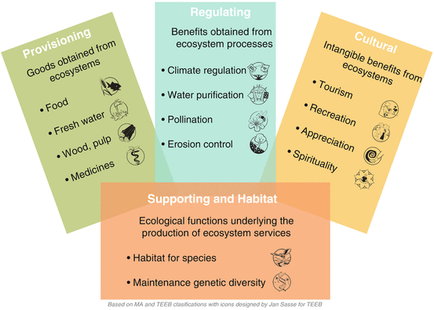
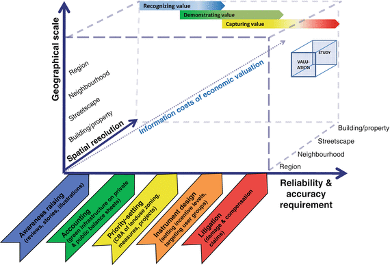
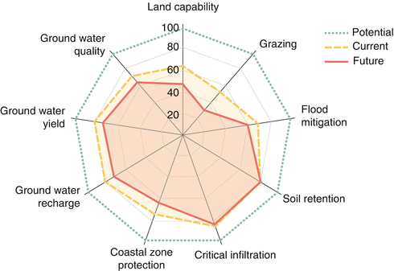

11.1 Reconnecting Cities to the Biosphere
Cities are interconnected globally through political, economic, and technical systems, and also through the Earth’s biophysical life-support systems (Jansson 2013). Cities also have disproportionate environmental impacts at the local, regional, and global scales well beyond their borders (Grimm et al. 2000, 2008; Seto et al. 2012), yet they provide critical leadership in the global sustainability agenda (Folke et al. 2011). Although urbanized areas cover only a small portion of the surface of the planet, they account for a vast share of anthropogenic impacts on the biosphere. Still, the impacts of urbanization on biodiversity and ecosystems as well as the potential benefits from ecosystem restoration in urban areas remain poorly understood (see e.g., McDonald and Marcotullio 2011). For further discussion on urban restoration ecology, also see Chap. 31.
11.1.1 Ecology of vs. Ecology in Cities
Cities appropriate vast areas of functioning ecosystems for their consumption and waste assimilation (see Chaps. 2 and 26). Most of the ecosystem services consumed in cities are generated by ecosystems located outside of the cities themselves, often half a world away (Rees 1992; Folke et al. 1996; Rees and Wackernagel 1996; Deutsch and Folke 2005, see Chap. 2). Folke et al. (1997) estimated that the 29 largest cities in the Baltic Sea Drainage Basin, taking into account only the most basic ecosystem services such as food production and assimilation of nitrogen and carbon, appropriate ecosystem areas equivalent to the size of the entire drainage basin, several hundred times the area of the cities themselves (Chap. 26). Thus, our analysis needs to go beyond what is sometimes referred to as “the ecology in cities” (Niemelä et al. 2011), which often focuses on single scales and on designing energy-efficient buildings, sustainable logistics, and providing inhabitants with functioning green urban environments, to put more focus on “the ecology of cities” characterized by interdisciplinary and multiscale studies with a social-ecological systems approach (Grimm et al. 2000; Pickett et al. 2001, see also Chap. 3). This framework acknowledges the total dependence of cities on the surrounding landscape and the links between urban and rural, viewing the city as an ecosystem itself (Grimm et al. 2008). We need to be concerned with the generation potential, not only to uphold and safeguard the well-being of city inhabitants, but also to effectively manage the potential of cities as arenas for learning (this aspect is discussed in detail in Chap. 30), development, and transformation.
11.1.2 Urban Ecosystems and Ecological Infrastructure
Definitions of urban areas and their boundaries vary between countries and regions (for a discussion on “What is urban?” see Chap. 1). The focus of this chapter is on the services and benefits provided by urban ecosystems, defined here as those areas where the built infrastructure covers a large proportion of the land surface, or as those in which people live at high densities (Pickett et al. 2001). In the context of urban planning, urban ecosystems are often portrayed as embedding both the built infrastructure and the ecological infrastructure. The concept of ecological infrastructure captures the role that water and vegetation in or near the built environment play in delivering ecosystem services at different spatial scales (building, street, neighborhood, and region). It includes all ‘green and blue spaces’ that may be found in urban and peri-urban areas, including parks, cemeteries, gardens and yards, urban allotments, urban forests, single trees, green roofs, wetlands, streams, rivers, lakes, and ponds (EEA 2011). Defining clear boundaries for urban ecosystems often proves difficult because many of the relevant fluxes and interactions necessary to understand the functioning of urban ecosystems extend far beyond the urban boundaries defined by political or biophysical reasons. Thus, the relevant scope of urban ecosystem analysis reaches beyond the city area itself; it comprises not only the ecological infrastructure within cities, but also the hinterlands that are directly affected by the energy and material flows from the urban core and suburban lands (Pickett et al. 2001, p. 129), including city catchments, and peri-urban forests and cultivated fields (La Rosa and Privitera 2013). Whilst virtually any ecosystem is relevant to meet urban ecosystem service demands, the focus here is on services provided within urban areas.
11.2 Classifying Urban Ecosystem Services
In recent years a mounting body of literature advanced our understanding of urban ecosystem services in their biophysical, economic, and socio-cultural dimensions. Furthermore, urban ecosystem services were addressed by major initiatives like the Millennium Ecosystem Assessment (Chapter 27 in MA 2005) and The Economics of Ecosystems and Biodiversity (TEEB 2011), and also have received increasing attention as part of the policy debate on ecological infrastructure. Yet, despite the fact that more than half of the world’s population today lives in cities, the attention given to urban ecosystems in the ecosystem services literature has yet been relatively modest as compared to other ecosystems like wetlands or forests. This section aims at classifying and describing ecosystem services provided in urban areas and how these may contribute to increase quality of life in cities.
Building on previous categorizations of ecosystem services (Daily 1997; de Groot et al. 2002), the Millennium Ecosystem Assessment (MA 2005) and The Economics of Ecosystem Services and Biodiversity (TEEB 2010) grouped ecosystem services in four major categories: provisioning, regulating, habitat, and cultural and amenity services (TEEB 2010) (Fig. 11.1). Provisioning services include all the material products obtained from ecosystems, including genetic resources, food and fiber, and fresh water. Regulating services include all the benefits obtained from the regulation by ecosystem processes, including the regulation of climate, water, and some human diseases. Cultural services are the non-material benefits people obtain from ecosystems through spiritual enrichment, cognitive development, reflection, recreation, and aesthetic experience as well as their role in supporting knowledge systems, social relations, and aesthetic values. Finally, supporting or habitat services are those that are necessary for the production of all other ecosystem services. Examples include biomass production, nutrient cycling, water cycling, provisioning of habitat for species, and maintenance of genetic pools and evolutionary processes.

Fig. 11.1
Classification of ecosystem services based on the Millennium Ecosystem Assessment (MA 2005) and the Economics of Ecosystems and Biodiversity initiative (TEEB 2012) (Produced by Gómez-Baggethun 2013 with icons designed by Jan Sasse for TEEB. Icons reproduced from Jan Sasse for TEEB. Published with kind permission of © Jan Sasse and TEEB 2013. All Rights Reserved)
Because different habitats provide different types of ecosystem services, general classifications need to be adapted to specific types of ecosystems. Urban ecosystems are especially important in providing services with direct impact on human health and security such as air purification, noise reduction, urban cooling, and runoff mitigation. Yet, which ecosystem services in a given scale are most relevant varies greatly depending on the environmental and socio-economic characteristics of each geographic location. Below we provide a classification and description of important ecosystem services provided in urban areas using the Millennium Ecosystem Assessment and the TEEB initiative as major classification frameworks, and drawing on previous research on the topic (e.g., Bolund and Hunhammar 1999; Gómez-Baggethun and Barton 2013).
11.2.1 Provisioning Services
11.2.1.1 Food Supply
Urban food production takes place in peri-urban farm fields, on rooftops, in backyards, and in community gardens (Andersson et al. 2007; Barthel et al. 2010). In most geographical contexts, cities only produce a small share of the food they consume, depending largely on other areas to meet their demands (Folke et al. 1997; Ernstson et al. 2010). In some geographical areas and in particular periods, however, food production from urban agriculture can play an important role for food security, especially during economic and political crises (Smit and Nasr 1992; Moskow 1999; Page 2002; Buchmann 2009; Barthel et al. 2011; Barthel and Isendahl 2013). Altieri et al. (1999) estimated that in 1996 food production in urban gardens of Havana included 8,500 t of agricultural products, 7.5 million eggs and 3,650 t of meat. Moustier (2007) provides an extensive summary of the importance of urban agriculture in 14 African and Asian cities. Among the results they found that 90 % of all vegetables consumed in Dar es Salaam (Jacobi et al. 2000) and 60 % of vegetables consumed in Dakar (Mbaye and Moustier 2000) originate from urban agriculture. With regards to staple foods such as rice, plantain banana, and maize, the situation is highly variable among cities. In Asia, the share of rice supplied by the city to urban residents ranges from 7 % (in Phnom Penh) to 100 % (in Vientiane, where pressure on land is low); Hanoi is an intermediary case with 58 % (Anh 2004; Ali et al. 2005). For a detailed examination of the connection between urbanization and food systems, see Chap. 26.
11.2.1.2 Water Supply
The growth of cities throughout the world presents new challenges for securing water to meet societal needs (Fitzhugh and Richter 2004). Ecosystems provide cities with fresh water for drinking and other human uses and by securing storage and controlled release of water flows. Vegetation cover and forests in the city catchment influences the quantity of available water (for a global overview of cities’ relationships with freshwater ecosystem services, see Chap. 3). One of the most widely cited examples of the importance of functioning ecosystems for city water supply is the New York City Watershed. This watershed is one of New York State’s most important natural resources, providing approximately 1.3 billion gallons of clean drinking water to roughly nine million people every day. This is the largest unfiltered water supply in the United States (Chichilnisky and Heal 1998). Another example is the Omerli Watershed outside Istanbul, Turkey. The Omerli Watershed is the most important among the seven Mediterranean watersheds that provides drinking water to Istanbul, a megacity with over ten million people. The watershed, however, is threatened by urban development in and around its drinking water sources, and it faces acute, unplanned pressures of urbanization with potentially serious impacts on water quality and biodiversity (Wagner et al. 2007). For a detailed assessment on Istanbul, including further discussion on the Omerli Watershed, see Chap. 16.
11.2.2 Regulating Services
11.2.2.1 Urban Temperature Regulation
Ecological infrastructure in cities regulates local temperatures and buffers the effects of urban heat islands (Moreno-Garcia 1994). For example, water areas buffer temperature extremes by absorbing heat in summertime and by releasing it in wintertime (Chaparro and Terradas 2009). Likewise, vegetation reduces temperature in the hottest months through shading and through absorbing heat from the air by evapotranspiration, particularly when humidity is low (Bolund and Hunhammar 1999; Hardin and Jensen 2007). Water from the plants absorbs heat as it evaporates, thus cooling the air in the process (Nowak and Crane 2000). Trees can also regulate local surface and air temperatures by reflecting solar radiation and shading surfaces, such as streets and sidewalks that would otherwise absorb heat. Decreasing the heat loading of the city is among the most important regulating ecosystem services trees provide to cities (McPhearson 2011).
11.2.2.2 Noise Reduction
Traffic, construction, and other human activities make noise a major pollution problem in cities, affecting health through stress. Urban soil and plants can attenuate noise pollution through absorption, deviation, reflection, and refraction of sound waves (Aylor 1972; Kragh 1981; Fang and Ling 2003). In row plantings of trees, sound waves are reflected and refracted, dispersing the sound energy through the branches and trees. It has also been shown that different plant species mitigate noise differently (see e.g., Ishii 1994; Pathak et al. 2007). Empirical research has found that vegetation factors important for noise reduction include density, width, height and length of the tree belts as well as leaf size and branching characteristics. For example, the wider the vegetation belt, the higher the density, and the more foliage and branches to reduce sound energy, the greater the noise reduction effect (Fang and Ling 2003). Noise reduction is also affected by factors beyond the characteristics of vegetation. For example, climate influences the velocity of sound propagation (Embleton 1963) and noise attenuation increases with distance between the source point and the receiver due to friction between atmospheric molecules when sound progresses (Herrington 1976).
11.2.2.3 Air Purification
Air pollution from transportation, industry, domestic heating, and solid urban waste incineration is a major problem for environmental quality and human health in the urban environment; it leads to increases in respiratory and cardiovascular diseases. Vegetation in urban systems can improve air quality by removing pollutants from the atmosphere, including ozone (O3), sulfur dioxide (SO2), nitrogen dioxide (NO2), carbon monoxide (CO) and particulate matter less than 10 μm (PM10) (Nowak 1994a; Escobedo et al. 2008). While significant differences in performance have been found between plant species (e.g., between deciduous and evergreen species), urban trees have been shown to be especially important in intercepting air pollutants (Aylor et al. 2003). The distribution of different particle size fractions can differ both between and within species and also between leaf surfaces and in waxes (Dzierzanowski et al. 2011). Removal of pollution takes place as trees and shrubs filter out airborne particulates through their leaves (Nowak 1996). Performance of pollution removal also follows daily variation because during the night the plant stomata are closed and do not absorb pollutants, and monthly variation because of the changes in light hours and because of the shedding of the leaves by deciduous forest during the winter.
11.2.2.4 Moderation of Climate Extremes
Climate change is increasing the frequency and intensity of environmental extremes; this poses increasing adaptation challenges for cities, especially for those located in coastal areas (Meehl and Tebaldi 2004; Zahran et al. 2008). In Europe, heat waves have been the most prominent hazard with regards to human fatalities in the last decade. The European 2003 heat wave, for example, accounted for more than 70,000 excess deaths (EEA 2010). Ecological infrastructure formed by mangroves, deltas and coral reefs can act as natural barriers that buffer cities from extreme climate events and hazards, including storms, heat waves, floods, hurricanes, and tsunamis; this infrastructure can drastically reduce the damage caused to coastal cities (Farber 1987; Danielsen et al. 2005; Kerr and Baird 2007). Vegetation also stabilizes the ground and reduces the likelihood of landslides. Devastating effects caused by events like the Indian Ocean Tsunami in 2004 and Hurricane Katrina in 2005 have led a number of scientists to call for a new vision in risk management and vulnerability reduction in cities, based on wise combinations in the use of built infrastructure (e.g., levees) and ecological infrastructure (e.g., protective role of vegetation) (Danielsen et al. 2005; Depietri et al. 2012).
11.2.2.5 Runoff Mitigation
Increasing the impermeable surface area in cities leads to increased volumes of surface water runoff, and thus increases the vulnerability to water flooding. Vegetation reduces surface runoff following precipitation events by intercepting water through the leaves and stems (Villarreal and Bengtsson 2005). The underlying soil also reduces infiltration rates by acting as a sponge by storing water in the pore spaces until it percolates as through-flow and base-flow. Urban landscapes with 50–90 % impervious cover can lose 40–83 % of rainfall to surface runoff compared to 13 % in forested landscapes (Bonan 2002). Interception of rainfall by tree canopies slows down flooding effects and green areas reduce the pressure on urban drainage systems by percolating water (Bolund and Hunhammar 1999; Pataki et al. 2011). Street trees in New York, for instance, intercept 890 million gallons of stormwater annually (Peper et al. 2007). Other means of reducing urban stormwater runoff include linear features (bioswales), green roofs, and rain gardens (Clausen 2007; Shuster et al. 2008). For example, green roofs can retain 25–100 % of rainfall, depending on rooting depth, roof slope, and the amount of rainfall (Oberndorfer et al. 2007). Also, green roofs may delay the timing of peak runoff, thus lessening the stress on storm-sewer systems. Rain gardens and bioretention filters can also reduce surface runoff (Clausen 2007; Villarreal and Bengtsson 2005; Shuster et al. 2008).
11.2.2.6 Waste Treatment
Ecosystems filter out and decompose organic wastes from urban effluents by storing and recycling waste through dilution, assimilation and chemical re-composition (TEEB 2011). Wetlands and other aquatic systems, for example, filter wastes from human activities; this process reduces the level of nutrients and pollution in urban wastewater (Karathanasis et al. 2003). Likewise, plant communities in urban soils can play an important role in the decomposition of many labile and recalcitrant litter types (Vauramo and Setälä 2010). In urban streams, nutrient retention can be increased by adding coarse woody debris, constructing in-channel gravel beds, and increasing the width of vegetation buffer zones and tree cover (Booth 2005).
11.2.2.7 Pollination, Pest Regulation and Seed Dispersal
Pollination, pest regulation and seed dispersal are important processes in the functional diversity of urban ecosystems and can play a critical role in their long term durability (Andersson et al. 2007). However, pollinators, pest regulators and seed dispersers are threatened by habitat loss and fragmentation due to urban development and expansion. In this context, allotment gardens (called community gardens in North America, i.e. a plot of land made available for individual, non-commercial gardening), private gardens and other urban green spaces have been shown to be important source areas (Ahrné et al. 2009). Also, research in urban ecosystem services shows that a number of formal and informal management practices in allotment gardens, cemeteries and city parks promote functional groups of insects that enhance pollination and bird communities, which in turn enhance seed dispersal (Andersson et al. 2007). To manage these services sustainably over time, a deeper understanding of how they operate and depend on biodiversity is crucial (Nelson et al. 2009). Jansson and Polasky (2010) have developed a method for quantifying the impact of change in pollination potential in the regional urban landscape. Their results indicate that while the impact of urban development on the pollination service can be modest, the erosion of the resilience of the service, measured through change in response diversity, could be potentially high. For discussion on response diversity see Elmqvist et al. (2003).
11.2.2.8 Global Climate Regulation
Because urban areas exhibit multiple artificial surfaces and high levels of fossil fuel combustion, climate change impacts may be exacerbated in cities (Meehl and Tebaldi 2004). Emissions of greenhouse gases in cities include carbon dioxide (CO2), methane (CH4), nitrous oxide (NO2), chlorofluorocarbons (CFCs), and tropospheric ozone (O3). Urban trees act as a sinks of CO2 by storing excess carbon as biomass during photosynthesis (Birdsey 1992; Jo and McPherson 1995; McPherson and Simpson 1999). Because the amount of CO2 stored is proportional to the biomass of the trees, increasing the number of trees can potentially slow the accumulation of atmospheric carbon in urban areas. Thus an attractive option for climate change mitigation in cites is tree-planting programs. The amount of carbon stored and sequestered by urban vegetation has often been found to be quite substantial, for instance, 6,187 t/year in Barcelona (Chaparro and Terradass 2009) and 16,000 t/year in Philadelphia (Nowak et al. 2007b). Urban soils also act as carbon pools (Nowak and Crane 2000; Pouyat et al. 2006; Churkina et al. 2010). Yet, the amount of carbon a city can offset locally through ecological infrastructure is modest compared to overall city emissions (Pataki et al. 2011).
11.2.3 Cultural Services
11.2.3.1 Recreation
Because city environments may be stressful for inhabitants, the recreational aspects of urban ecosystems are among the highest valued ecosystem service in cities (Kaplan and Kaplan 1989; Bolund and Hunhamar 1999; Chiesura 2004; Konijnendijk et al. 2013). Parks, forests, lakes and rivers provide manifold possibilities for recreation, thereby enhancing human health and well-being (Konijnendijk et al. 2013). For example, a park experience may reduce stress, enhance contemplativeness, rejuvenate the city dweller, and provide a sense of peacefulness and tranquility (Kaplan 1983). The recreational value of parks depends on ecological characteristics such as biological and structural diversity, but also on built infrastructure such as availability of benches and sport facilities. The recreational opportunities of urban ecosystems also vary with social criteria, including accessibility, penetrability, safety, privacy and comfort, as well as with factors that may cause sensory disturbance (i.e., recreational value decreases if green areas are perceived to be ugly, trashy or too loud) (Rall and Haase 2011). Urban ecosystems like community gardens also offer multiple opportunities for decommodified leisure and nowadays represent important remnants of the shrinking urban commons.
11.2.3.2 Aesthetic Benefits
Urban ecosystems play an important role as providers of aesthetic and psychological benefits that enrich human life with meanings and emotions (Kaplan 1983). Aesthetic benefits from urban green spaces have been associated with reduced stress (Ulrich 1981) and with increased physical and mental health (e.g., Maas 2006; van den Berg et al. 2010a). Ulrich (1984) found that a view through a window looking out at greenspaces could accelerate recovery from surgeries, and van den Berg et al. (2010b) found that proximity of an individual’s home to green spaces was correlated with fewer stress-related health problems and a higher general health perception. People often choose where to live in cities based in part on the characteristics of the natural landscapes (Tyrväinen and Miettinen 2000). Several studies have shown an increased value of properties (as measured by hedonic pricing) with greater proximity to green areas (Tyrväinen 1997; Cho et al. 2008; Troy and Grove 2008; Tyrväinen and Miettinen 2000; Jim and Chen 2006).
11.2.3.3 Cognitive Development
Exposure to nature and green space provide multiple opportunities for cognitive development which increases the potential for stewardship of the environment and for a stronger recognition of ecosystem services (Krasny and Tidball 2009; Tidball and Krasny 2010). As an example, urban forests and allotment gardens are often used for environmental education purposes (Groening 1995; Tyrväinen et al. 2005) and facilitate cognitive coupling to seasons and ecological dynamics in technological and urbanized landscapes. Likewise, urban allotments, community gardens, cemeteries and other green spaces have been found to retain important bodies of local ecological knowledge (Barthel et al. 2010), and embed the potential to compensate observed losses of ecological knowledge in wealthier communities (Pilgrim et al. 2008). The benefits of preserving local ecological knowledge have been highlighted in terms of increased resilience and adaptive capacities in urban systems (Buchmann 2009), and the potential to sustain and increase other ecosystem services (Colding et al. 2006; Barthel et al. 2010). For further discussion on how urban landscapes can serve as learning arenas for biodiversity and ecosystem services management, see Chap. 30.
11.2.3.4 Place Values and Social Cohesion
Place values refer to the affectively charged attachments to places (Feldmann 1990; Altman and Low 1992). Research conducted in Stockholm, for example, found sense of place to be a major driver for environmental stewardship, with interviewees showing strong emotional bonds to their plots and the surrounding garden areas (Andersson et al. 2007). Attachment to green spaces in cities can also give rise to other important societal benefits, such as social cohesion, promotion of shared interests, and neighborhood participation (Gotham and Brumley 2002). Examples include studies conducted in Chicago, Illinois, United States, and Cheffield, United Kingdom (Bennett 1997). Environmental authorities in the European Union have emphasized the role of urban green space in providing opportunities for interaction between individuals and groups that promote social cohesion and reduce criminality (European Environmental Agency 2011; Kázmierczak 2013). Likewise, urban ecosystems have been found to play a role in defining identity and sense of community (Chavis and Pretty 1999; Gotham and Brumley 2002). Research on sense of community in the urban environment indicates that an understanding of how communities are formed enable us to design housing that will be better maintained and will provide for better use of surrounding green areas (Newman 1981).
11.2.4 Habitat Services
11.2.4.1 Habitat for Biodiversity
Urban systems can play a significant role as refuge for many species of birds, amphibians, bees, and butterflies (Melles et al. 2003; Müller et al. 2010). Well-designed green roofs can provide habitat for species affected by urban land-use changes (Oberndorfer et al. 2007; Brenneisen 2003). In cold and rainy areas, golf courses in urban setting can have the potential to contribute to wetland fauna support (Colding and Folke 2009; Colding et al. 2009). Old hardwood deciduous trees in the National City Park of Stockholm, Sweden are seen as an important resource for the whole region for species with high dispersal capacity (Zetterberg 2011). Diversity of species may peak at intermediate levels of urbanization, at which many native and non-native species thrive, but it typically declines as urbanization intensifies (Blair 1996).
A synthesis of the above classification of urban ecosystem services is provided in Table 11.1
Table 11.1
Classification of important ecosystem services in urban areas and underlying ecosystem functions and components
Ecosystem functions | Ecosystem service type | Examples | Key references |
|---|---|---|---|
Energy conversion into edible plants through photosynthesis | Food supply | Vegetables produced by urban allotments and peri-urban areas | Altieri et al. (1999) |
Percolation and regulation of runoff and river discharge | Runoff mitigation | Soil and vegetation percolate water during heavy and/or prolonged precipitation events | Villarreal and Bengtsson (2005) |
Photosynthesis, shading, and evapotranspiration | Urban temperature regulation | Trees and other urban vegetation provide shade, create humidity and block wind | Bolund and Hunhammar (1999) |
Absorption of sound waves by vegetation and water | Noise reduction | Absorption of sound waves by vegetation barriers, specially thick vegetation | |
Dry deposition of gases and particulate matter | Air purification | Absorption of pollutants by urban vegetation in leaves, stems and roots | |
Physical barrier and absorption of kinetic energy | Moderation of environmental extremes | Storm, flood, and wave buffering by vegetation barriers; heat absorption during severe heat waves; intact wetland areas buffer river flooding | |
Removal or breakdown of xenic nutrients | Waste treatment | Effluent filtering and nutrient fixation by urban wetlands | Vauramo and Setälä (2010) |
Carbon sequestration and storage by fixation in photosynthesis | Global climate regulation | Carbon sequestration and storage by the biomass of urban shrubs and threes | |
Movement of floral gametes by biota | Pollination and seed dispersal | Urban ecosystem provides habitat for birds, insects, and pollinators | |
Ecosystems with recreational values | Recreation | Urban green areas provide opportunities for recreation, meditation, and relaxation | Chiesura (2004); Maas et al. (2006) |
Human experience of ecosystems | Cognitive development | Allotment gardening as preservation of socio-ecological knowledge | |
Ecosystems with aesthetic values | Aesthetic benefits | Urban parks in sight from houses | |
Habitat provision | Habitat for biodiversity | Urban green spaces provide habitat for birds and other animals that people like watching |
11.2.5 Ecosystem Disservices
Urban ecosystems not only produce ecosystem services, but also ecosystem disservices, defined as “functions of ecosystems that are perceived as negative for human well-being” (Lyytimäki and Sipilä 2009, p. 311). For example, some common city tree and bush species emit volatile organic compounds (VOCs) such as isoprene, monoterpenes, ethane, propene, butane, acetaldehyde, formaldehyde, acetic acid and formic acid, all of which can indirectly contribute to urban smog and ozone problems through CO and O3 emissions (Geron et al. 1994; Chaparro and Terradas 2009). Urban biodiversity can also cause damages to physical infrastructures; microbial activity can result in decomposition of wood structures and bird excrements can cause corrosion of stone buildings and statues. The root systems of vegetation often cause substantial damages by breaking up pavements and some animals are often perceived as a nuisance as they dig nesting holes (de Stefano and Deblinger 2005; Lyytimäki and Sipila 2009).
Green-roof runoff may contain higher concentrations of nutrient pollutants, such as nitrogen and phosphorus, than are present in precipitation inputs (Oberndorfer et al. 2007). Further disservices from urban ecosystems may include health problems from wind-pollinated plants causing allergic reactions (D’Amato 2000), fear from dark green areas that are perceived as unsafe, especially by women at night-time (Bixler and Floyd 1997; Koskela and Pain 2000; Jorgensen and Anthopoulou 2007), diseases transmitted by animals (e.g., migratory birds carrying avian influenza, dogs carrying rabies), and blockage of views by trees (Lyytimäki et al. 2008). Likewise, just as some plants and animals are perceived by people as services, as discussed above, animals such as rats, wasps and mosquitoes, and plants such as stinging nettles, are perceived by many as disservices. A summary of disservices from urban ecosystems is provided in Table 11.2.
Table 11.2
Ecosystem disservices in cities (Modified from Gómez-Baggethun and Barton 2013)
Ecosystem functions | Disservice | Examples | Key references |
|---|---|---|---|
Photosynthesis | Air quality problems | City tree and bush species emit volatile organic compounds (VOCs) | |
Tree growth through biomass fixation | View blockage | Blockage of views by trees standing close to buildings | Lyytimäki et al. (2008) |
Movement of floral gametes | Allergies | wind-pollinated plants causing allergic reactions | D’Amato (2000) |
Aging of vegetation | Accidents | Break up of branches falling in roads and trees | Lyytimäki et al. (2008) |
Dense vegetation development | Fear and stress | Dark green areas perceived as unsafe in night-time | Bixler and Floyd (1997) |
Biomass fixation in roots; decomposition | Damages to infrastructure | Breaking up of pavements by roots; microbial activity | Lyytimäki and Sipila (2009) |
Habitat provision for animal species | Habitat competition with humans | Animals/insects perceived as scary, unpleasant, disgusting | Bixler and Floyd (1997) |
11.3 Valuing Urban Ecosystem Services
11.3.1 Ecosystem Services Values
Valuation of ecosystem services involves dealing with multiple, and often conflicting value dimensions (Martinez Alier et al. 1998; Chan et al. 2012; Martín-López et al. 2013). In this section, we broaden the traditional focus of the ecosystem services literature on biophysical measurement and monetary values to explore a range of value domains, including biophysical, monetary, socio-cultural, health, and insurance values, and discuss concepts and methods through which they may be measured and captured.
11.3.1.1 Biophysical Values
Quantifying ecosystem service performance involves the use of biophysical measures and indicators. The difficulty of measuring ecosystem services in biophysical terms increases as the focus shifts from provisioning, to regulating to habitat, to cultural services. Thus, while most provisioning and some regulating ecosystem services can be quantified through direct measures, such as tons of food per hectare per year, or tons of carbon sequestered per hectare per year, in most cases measurement in biophysical terms involves the use of proxies and indicators.
Biophysical measures of ecosystem services are often presented as a prerequisite for sound economic valuations. While this may hold true, biophysical measures themselves often provide powerful information to guide urban planning. Thus, various biophysical indexes of urban green areas have been used for guiding planning procedures in cities (revised in Farrugia et al. 2013). An early attempt was made in Berlin, Germany with the Biotope Area Factor (BAF), which scored land surface types in development sites according to their ecological potential and formulated target BAFs for specific urban functions which developers were obliged to meet in order to obtain approval for any development proposal. Malmö City Council in Sweden adopted a similar system to incorporate green and blue infrastructure in land use planning, while aiming to reduce the extent of impervious surfaces in any development plans (Kruuse 2011). Another attempt to quantify the value of green areas was made in Kent Thameside in the United Kingdom (Defra 2008), which scored ecosystem services such as biodiversity, recreation and flood regulation using surrogates. The Southampton City Council in the United Kingdom developed a version of the Green Space Factor (GSF) tool to evaluate the contribution of green areas to water regulation flood control (Finlay 2010).
A summary with examples of indicators and proxies to measure ecosystem services and disservices is provided in Table 11.3.
Table 11.3
Examples of indicators and proxies for measuring urban ecosystem services and disservices in biophysical terms
Ecosystem services | Examples of biophysical indicators and proxies |
|---|---|
Provisioning services
| |
Food supply | Production of food (t/year) |
Freshwater supply | Water flow (m3/year) |
Regulating services
| |
Water flow regulation and runoff mitigation | Soil infiltration capacity; % sealed relative to permeable surface (ha) |
Urban temperature regulation | Leaf Area Index |
Noise reduction | Leaf area (m2) and distance to roads (m); noise reduction [dB(A)]/vegetation unit (m) |
Air purification | O3, SO2, NO2, CO, and PM10 μm pollutant flux (g/cm2/s) multiplied by tree cover (m2) |
Moderation of environmental extremes | Cover density of vegetation barriers separating built areas from the sea |
Waste treatment | P, K, Mg and Ca in mg/kg compared to given soil and water quality standards |
Climate regulation | CO2 sequestration by trees (carbon multiplied by 3.67 to convert to CO2) |
Pollination and seed dispersal | Species diversity and abundance of birds and bumble bees |
Cultural services
| |
Recreation and health | Area of green public spaces (ha)/inhabitant (or every 1,000 inhabitants); self-reported general health |
Cognitive development and knowledge preservation | Participation, reification, and external sources of social-ecological memory |
Habitat for biodiversity
| |
Habitat for biodiversity | Abundance of birds, butterflies and other animals valued for their aesthetic attributes |
Ecosystem disservices
|
Examples of indicators proxies
|
Air quality problems | Emission of VOCs (t/year)/vegetation unit |
View blockage | Tall trees close to buildings |
Allergies | Allergenicity (e.g., OPALS ranking) |
Accidents | Number of aged trees |
Fear and stress | Area of non-illuminated parks |
Damages on infrastructure | Affected pavement (m2) wood (m3) |
Habitat competition with humans | Abundance of insects, rats, etc. |
11.3.1.2 Economic Values
Conventional economic valuations are restricted to priced goods and services, which represent only a limited subset of ecosystem services (i.e., those which are exchanged in markets). As price formation is conditioned to the existence of supply and demand relations, every change in human well-being lacking a market is invisible to conventional economic accounts. The economic literature refers to these effects as environmental externalities, which can be either negative (e.g., pollution) or positive (e.g., ecosystem services). The public good nature of most ecosystem services implies that their economic value is often not adequately reflected in management decisions that are mainly based on economic information (e.g., cost–benefit analysis). Consequently, it is argued, ecosystem services with no explicit economic value tend to be depleted.
Because biodiversity loss generally involves long-term economic costs that are not adequately reflected in conventional economic accounts (Boyer and Polasky 2004; Tyrväinen et al. 2005; TEEB 2010; EEA 2011; Escobedo et al. 2011; Elmqvist et al. forthcoming) economic valuation of ecosystem services attempts to make visible the ‘hidden’ economic costs from the conversion of ecological infrastructure to built infrastructure (or from natural capital to human-made capital). These may include sanitary costs related to health damages from air pollution (Escobedo et al. 2008, 2011; Escobedo and Nowak 2009) and costs from increased property damages with loss of natural barriers to climate extremes (Costanza et al. 2006a).
Over the last few decades, a range of methods have been developed to calculate economic costs resulting from loss of ecological infrastructure. Avoided cost methods, for example, show that loss of urban vegetation can lead to increased energy costs in cooling during the summer season (McPherson et al. 1997; Chaparro and Terradas 2009). Likewise, decline of water regulation services from land-use change and loss of vegetation in the city catchments increase the dependence on water purification technologies, which are generally very costly (Daily and Ellison 2003). Economic costs may also derive the loss of ecosystem services such as air purification (McPherson et al. 1997; Nowak and Crane 2002), noise reduction by vegetation walls (Bolund and Hunhammar 1999), carbon sequestration by urban vegetation (McPherson et al. 1999; Jim and Chen 2009), buffering of climate extremes by natural barriers (Costanza et al. 2006a), and regulation of water flows (Xiao et al. 1998). These costs are not merely hypothetical. In most cases they are real economic costs derived from the partial substitution of ecological infrastructure and ecosystem services by built infrastructure and different economic services. Table 11.4 shows examples of quantitative measures of economic values directly or indirectly attached to ecosystems services in the urban context.
Table 11.4
Examples of economic valuations of five urban ecosystem services. Examples from empirical studies conducted in Europe, USA, and China
Ecosystem service | City | Ecological infrastructure | Biophysical accounts | Economic valuation | Reference |
|---|---|---|---|---|---|
Air purification | Barcelona, Spain | Urban forest | 305.6 t/y | €1,115,908 | Chaparro and Terradas (2009) |
Chicago, USA | Urban trees | 5,500 t/y | US$ 9 million | McPherson et al. (1997) | |
Washington, USA | Urban trees | 540 t/y | – | Nowak and Crane (2000) | |
0.12 t/ha/y | |||||
Modesto, USA | Urban forest | 154 t/y | US$ 1.48 million | McPherson et al. (1999) | |
3.7 lb/tree | US$ 16/tree | ||||
Sacramento, USA | Urban forest | 189 t/y | US$ 28.7 million | Scott et al. (1998) | |
US$ 1,500/ha | |||||
Lanzhou, China | Urban plants | 28,890 t pm/y | US$ 102 | Jim and Chen 2009
| |
0.17 t pm/ha/y | US$ 6.3/ha | ||||
1.8 million t SO2/y | – | ||||
10.9 t SO2/ha/y | |||||
Beijing, China | Urban forest | 2,192 t SO2/y | US$ 4.7 million | Jim and Chen (2009) | |
1,518 t pm/y | US$ 283/ha | Elmqvist et al. (Forthcoming) | |||
2,192 t SO2/y | |||||
(132 t SO2/ha/y) | |||||
Microclimate regulation | Chicago | City trees | Saved heating 2.1 GJ/tree | US$ 10/tree | McPherson et al. (1997) |
Saved cooling 0.48 GJ/tree | US$ 15/tree | McPherson (1992) | |||
Modesto, USA | Street and park trees | Saved 110,133 Mbtu/y | US$ 870,000 122kWh/tree | McPherson et al. (1999) | |
US$ 10/tree) | |||||
Sacramento, USA | Urban vegetation | Saved 9.8 MW/ha/y | US$ 1,774/ha/y | Simpson (1998) | |
Beijing, China | Urban forest | 1.4kWH/ha/day | US$ 12.3 million | Jim and Chen (2009) | |
US$ 1,352/ha/y | |||||
Carbon sequestration | Barcelona, Spain | Urban forest | 113,437 t (gross) | Chaparro and Terradas (2009) | |
5,422 t (net) | |||||
Modesto, USA | Urban forest | 13,900 t or 336 lb/tree | US$ 460,000 or US$ 5/tree | McPherson et al. (1999) | |
Washington DC, USA | Urban forest | 16,200 t | US$ 299,000/y | Elmqvist et al. (Forthcoming) | |
3,500 t/h/y | US$ 653/ha/y | ||||
Philadelphia, USA | Urban forest | 530,000 t (gross) | US$ 9.8 million (gross) | Nowak et al. (2007b) | |
96 t/ha | US$ 297,000 (net) | ||||
16,100 t (net) | |||||
2.9 t/ha/y | |||||
Beijing, China | Urban forest | 4, 200,000 t | US$ 20,827/ha/y | Jim and Chen (2009) | |
256 t/ha/y | |||||
Regulation of water flows | Modesto, USA | Urban forest | Reduced runoff 292,000 m3 or 845 gal/tree | US$ 616,000 or US$ 7/tree | McPherson et al. (1999) |
Sacramento | Urban trees | Annual rainfall reduced by 10 % | US$ 572/ha | Xiao et al. (1998) | |
Aesthetic information | Modesto, USA | Urban forest | 88,235 trees | US$ 1.5 million | McPherson et al. (1999) |
US$ 17/tree) | |||||
Guangzou, China | Urban green space | 7,360 ha | US$ 17,822/ha/y | Jim and Chen (2009) |
When pollutants are not specified, calculations include NO2, SO2, PM10, O3 and CO). Results from Jim and Chen (2009) concerted from RMB to $US after Elmqvist et al. forthcoming. Not all figures were normalized to net present values and therefore they should be taken as illustration only.
Using combinations of valuation methods is often necessary to address multiple ecosystem services (Boyer and Polasky 2004; Costanza et al. 2006b; Escobedo et al. 2011). The choice of valuation methods is determined by factors including the scale and resolution of the policy to be evaluated, the constituencies that can be contacted to obtain data, and supporting data constraints, all subject to a study budget (Table 11.5).
Table 11.5
Economic valuation of ecosystem services in urban planning
Scale | Urban planning issue | Role of economic valuation | Methodological challenges |
|---|---|---|---|
Region | Prioritizing urban growth alternatives between different areas | Valuing benefits and costs of (i) urban revitalization (ii) urban infill (iii) urban extension (iv) suburban retrofit (v) suburban extension (vi) new neighborhoods with (vii) existing infrastructure (ix) new infrastructure (x) in environmentally sensitive areas | Comprehensive benefit-cost analysis at multiple scales and resolutions at multiple locations is expensive |
Fair and rational location of undesirable land uses (LULUs) | Value of the impacts and disservices of e.g., power plants and landfills and foregone ecosystem service values of ecological infrastructure | Using benefit-cost analysis to allocate infrastructure with local costs versus regional benefits may not achieve fair outcomes | |
Preservation of productive peri-urban farm belt | Willingness to pay for preservation of open space and ‘short distance’ food | Large import substitution possibilities for locally produced food | |
Water availability to support urban growth | Valuation to support full cost pricing of water supply. Incentive effects of removing water subsidies | Can require inter-regional geographical scope of valuation | |
Using transferable development rights (TDR) to concentrate growth and achieve zoning | Determine farmer opportunity costs and benefits of foregoing urban development as a basis for predicting the size of a TDR market | ||
Neigh-borhood | Preserving views, open spaces, and parks in neighborhoods | Willingness to pay of households for quality and proximity of recreational spaces | Accounting for substitute sites and recreational activities |
Conserving soil drainage conditions and wetlands | Valuation of replacement costs of man-made drainage and storage infrastructure | Hydrological and hydraulic modeling required | |
Conserving water | Costs of household water harvesting, recycling and xeriscapes | Cost-benefit evaluation requires comparison with full costs of water supply | |
Natural corridors | Quantify opportunity costs of preserving corridors | Difficulty in specifying habitat connectivity requirements of corridors | |
Local farm produce | Willingness to pay for local, fresh produce | Large import substitution possibilities for locally produced food | |
Edible gardens | Recreational value of home gardens | ||
Street-scape | Street trees | Value pedestrian safety through slowing traffic; disamenities of heat islands; absorption of stormwater, and airborne pollutants | Associating ecosystem service values at neighborhood and street level to individual trees |
Green pavements for stormwater management | Willingness to pay of households for green streetscape; additional costs of larger dimension storm-water | ||
Building | Green rooftops | Additional costs of traditional stormwater management; mitigation of heat island | Associating ecosystem service values at neighborhood and street level to individual roofs, trees and lawns |
Yard trees | |||
Lawns vs. xeriscapes |
Avoided expenditure or replacement cost methods are often used to address values of regulating services such as air pollution mitigation and climate regulation (Sander et al. 2010). Meta-analyses on economic valuations of ecosystem services show that hedonic pricing (HP) and stated preference (SP) methods (and contingent valuation in particular), have been the methods most frequently used in urban contexts (Boyer and Polasky 2004; Tyrväinen et al. 2005; Costanza et al. 2006b; Kroll and Cray 2010; Sander et al. 2010; Brander and Koetse 2011). Economic valuation using hedonic pricing has often been used to capture recreational and amenity benefits (Tyrväinen and Miettinen 2000), views and aesthetic benefits (Anderson and Cordell 1985; Sander et al. 2010), noise reduction (Kim et al. 2007), air quality (Smith and Huang 1995; Bible et al. 2002; Chattopadhyay 1999), and water quality (Leggett and Bockstael 2000). A review by Kroll and Cray (2010) shows that hedonic pricing methods have been used mainly to value property features at neighborhood scales, especially in relation to open space, vegetation, and wetlands (Table 11.6).
Table 11.6
Overview of hedonic pricing studies in cities
Scale | Property feature | # of studies |
|---|---|---|
National/regional | Policies affecting property rights | 5 |
Regional/neighborhood | Open space | 28 |
Water & wetlands | 24 | |
Neighborhood/streetscape | Open space vegetation & trees | 20 |
Streetscape | Pavement type | 7 |
Streetscape/property | Climate & temperature | 5 |
Building | Energy efficiency | 7 |
Table 11.7 suggests potential valuation methods that can inform urban planning issues at different scales.
Table 11.7
Potential valuation methods for urban ecosystem service valuation
Valuation method | Types of value, ecosystem services | Scale | Constituencies | Constraints | |
|---|---|---|---|---|---|
Hedonic pricing (Revealed Preferences) | Use values (option value) | Building, streetscape and neighborhood characteristics | Home and property owners | Observable quality variables. Spatially explicit | |
Cultural services (amenities) | Autocorrelation and latent variables | ||||
Travel cost (Revealed Preferences) | Use values | Regional park/recreational destinations | Recreational visitors | No/low travel costs to neighborhood open spaces. Spatially explicit. | |
Cultural services (amenities) | Locational self-selection. | ||||
Contingent valuation (Stated Preferences) | Use and non-use values | All infrastructure scales, easier for location specific policy scenario | Households or individuals, often as voters | Hypothetical, question framing issues, information burden | |
All ecosystem services, but often amenities | Usually not spatially explicit | ||||
Service bundles | |||||
Choice experiments (Stated Preferences) | Use and non-use values | All infrastructure scales, but easier for location specific policy choice alternatives | Households or individuals, often as consumers | Hypothetical, question framing issues, | |
All ecosystem services, but often amenities. Incremental service levels, controlling for bundles | Information burden | ||||
Usually not spatially explicit | |||||
Production | Use values | Neighborhood and regional scale | Natural scientists, experts | Requires spatially explicit biophysical modeling. | |
Function/Damage cost Replacement cost | Regulating services Use values | Building, streetscape, neighborhood level municipal infrastructure | Engineers, experts | Determining service equivalence for man-made replacement; depends on health and safety standards | |
All services, but often regulating services |
11.3.1.3 Social and Cultural Values
People bring various material, moral, spiritual, aesthetic, and other values to bear on the urban environment; their values can affect their attitudes and actions toward ecosystems and the services they provide. These include emotional, affective and symbolic views attached to urban nature that in most cases cannot be adequately captured by commodity metaphors and monetary metrics (Norton and Hannon 1997; Martinez Alier et al. 1998; Gómez-Baggethun and Ruiz-Pérez 2011; Daniel et al. 2012). Here, we refer to these values broadly as social and cultural values. The ecosystem services literature has defined cultural values as “aesthetic, artistic, educational, spiritual and/or scientific values of ecosystems” (Costanza et al. 1997, p. 254) or as “non-material benefits people obtain from ecosystems through spiritual enrichment, cognitive development, reflection, recreation, and aesthetic experience” (Millennium Ecosystem Assessment 2005, p. 894).
Social and cultural values are included in all prominent ecosystem service typologies (Daily et al. 1997; de Groot et al. 2002; Millennium Ecosystem Assessment 2005). Yet, compared with economic and biophysical values, social, cultural, and other non-material values of ecosystems and biodiversity have generally been neglected in much of the ecosystem services literature. Moreover, social and cultural values may be difficult to measure, often necessitating the use of more holistic approaches and methods that may include qualitative measures, constructed scales, and narration (Patton 2001; Chan et al. 2012). In some cases, tools have been developed to measure these values using constructed scales, as in the case of sense of place (Williams and Roggenbuck 1989; Shamai 1991) and local ecological knowledge (Gómez-Baggethun et al. 2010a). In other cases translating cultural values into quantitative metrics may be too difficult or produce results that are nonsensical or meaningless.
Recent research has made substantial progress in the quest to better integrate social perspectives and valuation techniques into the ecosystem services framework, and to enable a fuller representation of socio-cultural values in research and practice (e.g., Chan et al. 2012). Articulation of social and cultural values in decision-making processes may require, in most cases, some sort of deliberative process, use of locally defined metrics, and valuation methods based on qualitative description and narration. A set of values that may be labeled as socio-cultural and associated descriptions is provided in Table 11.8.
Table 11.8
Socio-cultural values of ecosystems and biodiversity
Socio-cultural values | Explanation | References |
|---|---|---|
Spiritual values | In many places, especially among peoples with animistic religions, ecosystems and biodiversity are deeply intertwined with spiritual values | Stokols (1990) |
Sense of place | Emotional and affective bonds between people and ecological sites | |
Sense of community | Feelings towards a group and strength of attachment to communities | |
Social cohesion | Attachment as source of social cohesion, shared interests, and neighborhood participation |
11.3.1.4 Health Values
Multiple connections between urban vegetation and human health have been identified (Tzoulas et al. 2007; Bowler et al. 2010a), and the study of the links between green areas, human health and recovery rates is a rapidly expanding field of research (Grahn and Stigsdotter 2003). For example, access to green space in cities was shown to correlate with longevity (Takano et al. 2002), with recovery from surgeries (Ulrich 1984) as well as with self-reported perception of health (Maas 2006; van den Berg et al. 2010a). Proximity to green space reduced stress in individuals (Korpela and Ylén 2007), and children with attention deficit disorder have showed improved alertness (Taylor and Kuo 2009). Evidence also exists of other health benefits that correspond to green space availability (Hu et al. 2008; Bedimo-Rung et al. 2005; Ohta et al. 2007). Kaczynski and Henderson (2007) reviewed 50 quantitative studies that looked at the relationship between parks and physical activity and found that proximity to parks was associated with increased physical activity.
Green spaces have also been shown to influence social cohesion by providing a meeting place for users to develop and maintain neighborhood ties (Maas et al. 2009; Kázmierczak 2013). Other studies suggest that urban ecosystem services like air pollution reduction (Lovasi et al. 2008; Pérez et al. 2009) and urban cooling (Bowler et al. 2010b) have multiple long term health benefits. However, although the evidence of most studies suggests that green spaces have beneficial health effects, it should be noted that establishing a causal relationship has proven very difficult (Lee and Maheswaran 2010).
11.3.1.5 Environmental Justice Values
Social practices not only affect which ecosystem services are produced through the management of urban ecosystems (Andersson et al. 2007), but also who in society benefits from them (Ernstson 2012). Urban political ecology is the study of ecological distribution conflicts (i.e., conflicts on the access to ecosystem services and on the burdens of pollution). Environmental justice (Hofrichter 1993) represents the perspective within political ecology that conceives of balanced access to ecosystem services and balanced exposure to pollution across groups as a fundamental right. The notion was first used in relation to environmental conflicts in cities of the United States, where minority groups including African Americans, Latinos, and Native Americans bore disproportionate burdens of urban pollution and exposure to toxic waste (Martínez Alier 2005). While the bulk of the literature has focused on unequal exposure to pollution, the study of environmental conflicts related to unequal access to the benefits of ecosystem services are likely to become an important field of research for political ecology in the coming years. A recent study by Ernstson (2012) draws on empirical studies from Stockholm, Cape Town, and other cities to inform a framework to relate ecosystem services to environmental justice in urban areas.
Ecological distribution conflicts not only emerge from unequal access to ecosystem services within cities but also from asymmetries in the appropriation of ecosystem services by cities vis-à-vis their surrounding environment and more distant regions (Hornborg 1998). Extensive research has shown that urban growth depends on the appropriation of vast areas of ecosystem services provision beyond the city boundaries (Folke et al. 1997; Rees 1992; Rees and Wackernagel 1996). Thus, an important associated value of urban ecosystem services resides in their potential to reduce the ecological footprint of cities, and thus, cities’ ecological debt to the non-urban environment. Building on the ecosystem services concept, Gutman (2007) calls for a new rural–urban compact, where cities channel more employment opportunities and more income to the rural areas in exchange for a sustainable supply of products and ecosystem services provided by restored rural environments.
11.3.1.6 Insurance Values
Urban ecological infrastructure and ecosystem services can play a major role in increasing the resilience of cities through enhancing their ability to cope with disturbance and adapt to climate and other global change. The contribution of ecological infrastructure and ecosystem services to increased resilience and reduced vulnerability of cities to shocks has been referred to as a form of insurance value (Gómez-Baggethun and de Groot 2010). Ecosystem services that are critical to the resilience of cities in response to specific disturbances include urban temperature regulation, water supply, runoff mitigation, and food production. For example, urban temperature regulation can be critical to buffer the effects of heat waves (Lafortezza et al. 2009; EEA 2010; Depietri et al. 2012), ecological infrastructure that enhances water supply can increase resilience to drought, and runoff mitigation provided by urban vegetation can reduce the likelihood of damages by flooding and storms (Villarreal and Bengtsson 2005).
Special attention has been given to the role that food production in urban allotments can play in increasing food security and building resilience to shocks, especially in times of economic and political crisis (Smit and Nasr 1992; Moskow 1999; Page 2002; MA 2005; UNEP 1996). The Millennium Ecosystem Assessment notes that “for many of today’s urban dwellers, urban agriculture provides an important source of food and supplementary income” (MA 2005, p. 810). In Cuba, urban agriculture that emerged in response to the decline of Soviet aid and trade and the persistence of the trade embargo came to play a major role in food security (Altieri et al. 1999; Moskow 1999). Likewise, urban agriculture has provided an important safety net for landless peoples in sub-Saharan Africa (Maxwell 1999). At present, urban social movements associated with allotments gardens are emerging all around Europe (Barthel et al. 2010). Table 11.9 provides examples of how urban allotments can contribute to increasing resilience and storing social-ecological memory to deal with shocks.
Table 11.9
Sources of resilience and carriers of social-ecological memory to deal with disturbance and change in urban allotments
Category | Examples found in allotment gardens |
|---|---|
Habits/rituals (participation) | Imitation of practices, exchange of seeds, embodied habits |
Oral tradition (participation) | Ongoing negotiations, mentor programs, daily small talk |
Rules-in-use (reification) | Norms of social conduct, norms towards the environment, property rights |
Physical forms/artifacts (reification) | Written material, pictures, the gardens, tools, stories |
External memory sources | Media and organizations external to individual allotment gardens |
Recent contributions have also noted the role of urban ecosystems in maintaining living bodies of local ecological knowledge (Andersson et al. 2007). Because local and traditional knowledge systems embed accumulated knowledge and practices to cope with environmental change, maintaining these bodies of knowledge can be essential for resilience to shocks (Barthel et al. 2010; Gómez-Baggethun et al. 2012).
Measuring the insurance value of resilience remains a challenging task. For example, there is growing evidence that increased resilience can bring multiple indirect economic benefits (Walker et al. 2010). Yet, translating the value of resilience into monetary metrics can be complicated and in some cases also useless. Because the economic value of ecosystem services is affected by the distance to ecological thresholds, trying to capture the value of resilience with economic valuation at the margin can be risky and even misleading (Limburg et al. 2002); when thresholds are close, small changes can trigger abrupt shifts in ecosystem services and related values (Scheffer et al. 2001; Walker and Meyers 2004; Pascual et al. 2010).
11.4 Ecosystem Services and Urban Governance
11.4.1 Connecting Ecosystem Service Values to Urban Policy and Governance
Local authorities in many cities throughout the world are looking for innovative ways to maintain and increase ecological infrastructure as a part of urban planning and design (Rosenzweig et al. 2009; see also Chap. 27). Yet, many studies have suggested that the ability of local authorities to implement ecological infrastructure is not sufficiently recognized and hence lacks further integration into spatial planning systems (Kruuse 2011). Economic and non-economic valuation of ecosystem services is often demanded by policy makers and practitioners as supporting information to guide decisions in urban planning and governance. Ways in which valuation can inform urban planning include awareness raising, economic accounting, priority-setting, incentive design, and litigation, thus broadly reflecting the objectives of “recognizing, demonstrating, and capturing value” as suggested in the TEEB report (TEEB 2010) (Fig. 11.2).

Fig. 11.2
Trade-offs between scale, resolution, and accuracy in recognizing, demonstrating and capturing values in different decision-support contexts of valuation (Source: Adapted from Gómez and Baggethun 2012; Modified from Gómez-Baggethun and Barton 2013, p. 241. Published with kind permission of © Elsevier 2012. All Rights Reserved)
The demand for accuracy and reliability of valuation methods increase successively when moving from a policy setting, requiring simply awareness raising (e.g. regarding costs of ecosystem service loss); to including ecological infrastructure in accounting of municipal assets; to priority-setting (e.g. for location of new neighborhoods); to instrument design (e.g. user fees to finance public utilities); or finally to calculation of claims for damage compensation in a litigation (e.g. siting of locally undesirable land-uses (LULUs)). While several monetary valuation methods are potentially applicable at different spatial scales, valuation studies in urban areas for support in any given decision-making context are more demanding because of requirements for higher spatial resolution and multiple scales of analysis. Using valuation of urban ecosystem services for decisions about ecological infrastructure requires attributing service values to the particular assets at specific locations. For regulating services this requires some form of spatially explicit biophysical modeling which increases valuation costs with increasing geographical scale and resolution (Fig. 11.2).
11.4.2 Ecosystem Services in Urban Planning and Design
A better understanding of ecosystem services, their spatial characteristics and interrelations is very much needed in order to move ecosystem services from an assessment tool to a practical instrument for planning and design (Troy and Wilson 2006). For a discussion of patterns and trends in urban biodiversity and design, with applications to ecosystem services, see Chap. 10. Ecosystem service research is slowly merging with landscape ecology and spatial planning to address the issue of the scales and structures related to the generation and utilization of ecosystem services (see e.g., Fisher et al. 2009). There are several possible spatial relationships between the scale at which one ecosystem service is generated and the scale at which people may benefit from it. Some services can only be enjoyed at the source (e.g., shading from vegetation or many recreational uses of green areas), whereas others spill over into adjacent areas (e.g., noise reduction, wind breaks and pollination). Such spill-over may be unidirectional or directional, the latter partly due to physical geography (e.g., of waterways, topography, and location of roads) and the location of the beneficiaries. The connection between ecosystem service source areas and end-users is mediated by social structures such as built infrastructure and institutions defining access to land. There are a wide range of solutions for providing the people in different cities with similar ecosystem services and city-specific scales of relevance for addressing each ecosystem service.
Spatial scales and landscape structure affect the possibilities and constraints for ecosystem service planning. Efforts to address bundles of services to create or maintain multifunctional landscapes have seen considerable progress in the last decade. On larger scales, access to multiple ecosystem services can be achieved by ensuring generation of different ecosystem services in different parts of the landscape—as long as they are accessible to the users (see Brandt and Vejre 2003). However, the scale in these studies is often coarse and is not well suited to pick up the small-scale heterogeneity of the urban landscape. When the potential service-providing areas are few and situated in a matrix of many and diverse users, the number of services expected from each of these areas is likely to increase. Multiple interests coupled with limited size will highlight trade-offs between services and potentially lead to conflicts.
The urban mosaic is often complex and characterized by multiple spatial boundaries between different land-uses. With such heterogeneity, relative location and context can be expected to be especially important. Some ecosystem services will rely on species that require easy access to two or more habitat types (Andersson et al. 2007). For example, Lundberg et al. (2008) described how long-term maintenance of an oak dominated landscape with highly valued cultural and aesthetical qualities in Sweden depends also on patches of coniferous forest, the latter providing the main seed disperser, Eurasian Jay (Garrulus glandarius), with breeding habitat. Other ecosystem services such as pest control or pollination rely on close proximity to a source area (e.g. Blitzer et al. 2012).
Many ecosystem services are directly mediated or provided by different organisms (Kremen 2005) and can thus be addressed through a focus on these organisms. From a temporal perspective, long-term provisioning of ecosystem services within cities raises concerns about population dynamics, including the risks of extinction (at least on the local scale) and potential for re-colonization. For many species, habitat within cities may be perceived as quite fragmented, suggesting not only that future urban development should try to avoid further fragmentation but also that increased connectivity should be one of the prime objectives for restoration efforts (Hanski and Mononen 2011). It seems reasonable that the general character of urban green structures should be as similar as possible to that of the hinterlands in order to benefit the most from potential near-city source areas of ecosystem-service-providing organisms. To draw on these source areas, cities need a connected green structure that reaches all the way through urban and peri-urban areas into the rural.
From a spatial perspective, at least two distinct strategies for ensuring ecosystem service generation can be identified (see Forman 1995). The first draws on traditional conservation planning and is foremost concerned with enhancing and securing internal values within a bounded area, for example biodiversity or recreational opportunities within a protected area. This approach advocates large areas, and if spatial issues are considered at all it is usually in terms of green area networks where “green areas” are not necessarily the same as ecosystem service generating areas. The second strategy adopts more of a landscape management perspective in which the focus is on enhancing the performance of all parts of the landscape (see Fahrig et al. 2011), not just the few large areas suggested in the first approach. Instead, this perspective highlights the potential of smaller units interspersed throughout an area (for example, small clumps of trees mixed with residential development may enhance overall biodiversity or aesthetic values). The two approaches are by no means incompatible or always opposing, but their focus, prioritizations, and trade-offs differ. Both are needed and address different aspects of ecosystem services.
11.5 Ecosystem Services in Three Cities
Since appropriate management strategies for ecosystems outside and within cities may differ due to, for example, the difference in social, ecological and economic pressures, it is essential to acquire a fairly detailed outline of a city’s ecosystem service needs, both within and outside the city boundaries. The information on where different ecosystem services are being produced (i.e., the location of the production unit), whether inside the city itself or elsewhere, is also significant in determining how vulnerable or resilient a city and its inhabitants are to potential disruptions in the generation of ecosystem services when exposed to change. Assessing restoration/transformation potential in the urban landscape is important for mitigating disruptions in service generation and can be a powerful tool for urban planning. Furthermore, since the generation of ecosystem services in a specific ecosystem often affects the generation potential in other ecosystems, it is also crucial to identify spill-over effects. In the following tables a review of ecosystem services for three different cities are presented: Cape Town, New York, and Barcelona (in-depth assessments on Cape Town and New York are presented in Chaps. 24 and 19, respectively).
11.5.1 Cape Town
The city of Cape Town is home to approximately 3.7 million people. It is characterized by apartheid city planning with racially distinct urban residential areas and a massive disparity in development between these areas. Key socio-economic challenges within the city include the provision of housing, education, transport infrastructure, nutrition and healthcare. Current development strategies acknowledge these issues and also recognize that population growth and migration to this city will increase the magnitude of these challenges.
The Cape Floristic region in which Cape Town is located is a globally recognized biodiversity hotspot. The city is home to 19 of the 440 national vegetation types, and hosts 52 % of the nationally critically endangered vegetation types (Rebelo et al. 2011). Cape Town is also a major tourism destination in Africa, a function of the heterogeneous natural environment, which provides multiple other ecosystem services. The Table Mountain National Park, which is surrounded by the city, is a key conservation area for retaining both the biodiversity as well as the ecosystem services that support local residents (Anderson and O’Farrell 2012). The lowland areas within the City area are not well protected and are under extreme and constant pressure of transformation, particularly for much-needed housing (see Chap. 24). In a recent assessment of the ecosystem services found within Cape Town, O’Farrell et al. (2012) examined the effect of transformation on a number of services by contrasting historical landscape structure (500 years prior) with current conditions, and in addition explored potential future transformation effects (using a scenario where all undeveloped land not under formal conservation protection was transformed to formal housing) (Fig. 11.3). Their study indicated that all services had decreased from their potential level; provisioning services were particularly affected, with reductions between 30 and 50 % depending on the service. The study highlights the significance of the loss of regulating services, which while less threatened than other services in the study, are potentially more problematic when lost, as these services must be delivered in situ. Whereas provisioning services can be outsourced to areas beyond the city boundaries (such as the provision of food), this is not possible with most regulating services (such as flood mitigation and coastal zone protection) (see Table 11.10).

Fig. 11.3
Present and potential changes in ecosystem service supply for Cape Town shown as a percentage of the potential service produced (Modified from O’Farrell et al. 2012, p. 6. Published with kind permission of © Ecology and Society 2012. All Rights Reserved)
Table 11.10
Ecosystem services in Cape Town
Ecosystem services | Location of production: local, regional, global | Production unit | Spill over effects | Unit affected by spill over | ES affected | Restoration, transformation potential | References |
|---|---|---|---|---|---|---|---|
Provisioning
| |||||||
Food (broken down below) | |||||||
(Vegetables) | Local | Private gardens, community gardens | Recreation, food security, reduced biodiversity, community cohesion, pollution and N & P into ground water | Biodiversity remnant patches, open space, ground water sources affected locally | Positive recreation benefits, livestock production and water purification negatively impacted | ||
(Crop production) | Local | Urban agricultural areas | Biodiversity loss, green house gas (GHG) emissions. | O’Farrell et al. (2012) | |||
(Livestock) | Local, regional | Vegetated areas, urban open space | GHG emissions, biodiversity loss, social well-being, cultural identity | Biodiversity remnant patches, open space | Cultivation, biodiversity conservation, negatively impacted | Land management programs to reverse degradation are possible | |
(Freshwater fish) | Local | Dams & wetlands | Food security and conservation | Dams & wetlands | Recreation | Possible with reduced extraction | |
(Seafood) | Local, Regional, global | Ocean, lagoons, estuaries | Ecological functioning (supporting services) | Ocean, lagoons, estuaries | Recreation | Possible with reduced extraction | Turpie et al. (2003) |
Natural medicinal, ornamental and food resources | Local, regional | Natural vegetation | Possible population level impacts and loss of biodiversity | Natural vegetation | Biodiversity conservation | Possible with reduced extraction | Petersen et al. (2012) |
Drinking water supply | Berg, Breede Disa, Palmiet and Steenbras river catchments | Surrounding mountain catchment and watersheds | Local climate regulation; Recreation, biodiversity conservation in mountain catchments, invasion by alien plants | Catchments | Agriculture | Clearing catchments of invasive alien plants | |
Fuel wood | Local | Natural vegetation (degraded) | Positive biodiversity effects – clearing of invasive alien vegetation | Open spaces, conservation areas, catchments | Natural vegetation remnants (positive effect) | Harvesting fuel wood typically a restoration benefit as harvested species are invasive alien plant species | Lannas and Turpie (2009) |
Fiber harvest | Local and regional | Wetlands, coastal plains | Habitat impacted | Wetland edges, coastal plains (restios) | Water quality regulation (negatively affected) | ||
Soil retention | |||||||
Regulating
| |||||||
Water purification | Berg, Breede Disa, Palmiet and Steenbras river catchments | Wetlands, rivers, vleis | Positive biodiversity and conservation impacts, agricultural practices curtailed | Mountain catchments, river systems and their buffer areas | Agriculture | Brown and Magoba (2009) | |
Water infiltration/groundwater recharge | Local | Natural vegetation, gardens, open space | Reduced flooding potential, increased pollution of ground water sources if water polluted | Local level | Vegetation and biodiversity restoration | O’Farrell et al. (2012) | |
Soil retention | Local | Natural vegetation, gardens, open space | Restricted agricultural practices on steep slopes with high rainfall | Vegetation and biodiversity restoration | O’Farrell et al. (2012) | ||
Carbon sequestration | Local and regionally | All natural vegetation remnants, plantations, parkland street trees | Climate regulation, shade provision, high water consumption effects possible, and biodiversity impacts | Catchments and water bodies | Water provision | Vegetation restoration | |
Flood control and mitigation | Local and regional | Natural vegetation remnants | Filtration and absorption of water and waterborne pollutants, agricultural land use food provision restricted, recreational use of rivers areas enhanced | Open space, remaining natural remnants, river buffer areas | Cultivation areas restricted (negative effect), ground water recharge enhanced | Wetland and vegetation restoration | |
Coastal storm surge protection | Local | Natural vegetation remnants | Restricted use of coastal environments | Coastal dune systems (extending from water’s edge to 1 km inland) | Coastal vegetation restoration | O’Farrell et al. (2012) | |
Noise reduction | Locally | Street trees, plantations, | Heat island reduction, carbon sequestration | City planting, recreation | |||
N retention | Regionally | Wetlands | Restoration of wetlands, creation of new wetlands | ||||
Pollination | Local, regionally | Gardens, parks, golf courses, natural vegetation remnants and nature reserves | Retaining pollinators requires maintaining ES production units, transformation to certain crops and timber is restricted | Local open space effects | Production of timber, crops | Increase % semi-natural areas, connectivity | O’Farrell et al. (2012) |
Cultural
| |||||||
Health | Local, regional, national | Green open space | Pollination, Biological control, infiltration, flood mitigation, coastal protection are all positively affected | Macro-scale urban planning, creative design of open space | |||
Recreation | Local, regional | Beaches, nature reserves, parks, urban green space, gardens | Sense of place; education; health; increase in property value and tax revenue | Individuals, communities, Neighbourhoods | De Wit et al. (2012) | ||
Tourism | Local, regional | All natural assets | |||||
Education opportunities | Local, regional, national | Conservation areas, wetlands, rivers, estuaries, beaches | Environmental values; improved ecosystem function | Individuals, communities, urban vegetation remnants and reserves, urban waterways, breaches | All locally-produced services | O’Farrell et al. (2012) | |
Sense of place cultural ties | Local, national | Rural areas, usually distant, national parks | Increased well-being | De Wit et al. (2012) | |||
Cultural rites/initiation | Local | Open green natural space, isolated area | Affects social cohesion, human-nature interactions, | Individuals, communities | Sense of well-being, sense of place | ||
Recognized important ecosystem services to the City of Cape Town are the provision of water supply, flood mitigation, coastal zone protection and tourism (see Table 11.10). Many of these services, and the biodiversity and ecological infrastructure on which they depend, have been degraded. There are a number of examples where there are programs and projects in place aimed at attempting to restore these and thereby enhance ecosystem service benefits.
Invasive alien plants have become a dominant feature in the catchments that supply Cape Town with water. These plants use significantly more water than the indigenous vegetation, and thereby decrease surface run-off and ultimately water supply and security (Le Maitre et al. 1996). The Working for Water program was established in 1995 as a direct response to the loss of this critical resource (Van Wilgen et al. 1998) (see Chap. 24). Clearing teams are continuing to remove invasive plants from these catchments in an attempt to restore optimal water flows, which are critical to the growth and development of the city.
Within this restoration space, interventions are emerging at many tiers of society. Smaller initiatives driven by local communities or smaller government agencies aimed at restoring natural vegetation have been shown to have considerable ecosystem service benefit (Avlonitis 2011). While these often emerge in a cultural space, or towards recreational ends, there are evident ecological spin-offs. A study by Avlonitis (2011) has shown the potential of communities to work in conjunction with larger government initiatives such as Working for Wetlands, where community initiative and labor are used to promote the development of indigenous vegetation gardens. Here, cultural agendas are forwarding the restoration of regulating services. This study points to the value of targeting sites where multiple agendas can be met through intervention. Restoration initiatives should take advantage of community interest and energy and align interventions with local cultural needs. An examination of the relevance of urban green space to the local population shows multiple opportunities to find these nodes of congruent opportunity (Pitt and Boulle 2010).
The opportunity for restoring the regulating services of coastal zone protection are largely lost where there has been considerable historic development close to the coastal zones. These areas tend to be associated with erosion problems and are a major financial sink for City management who strive to protect settlements, often with expensive engineering interventions. Opportunities need to be sought for the effective incorporation of existing regulating services into ongoing and future developments. Large buffer zones protecting coastal dune systems with an associated functioning ecology are a critical service and one likely to become more so with projected sea rise and increased storm surge. A spatial plan needs to be developed assessing where restoration might be an option, and where engineering interventions must be considered. Remnant areas need the strictest protection as the city continues to grow within these areas (see Chap. 24 for additional discussion on this challenge).
There are numerous cases where ecosystem services may be effectively delivered outside of the natural indigenous biodiversity framework. For example, certain urban agricultural areas may be effective sites of groundwater recharge serving as a site of effective regulation, and forest plantations provide much enjoyed recreation sites serving an important cultural service. What is apparent is a suite of emerging novel ecosystems that speak to ecosystem service delivery, but do not necessarily meet biodiversity conservation goals. The high endemic biodiversity and global conservation significance of the vegetation of South Africa’s Western Cape means that conservation agendas tend to predominate in this discourse. This is where ecosystem services and biodiversity conservation agendas may diverge. Future spatial planning and development as well as restoration activities must pay due attention to both conservation priorities and the ecosystem service needs and delivery potential of the remaining open spaces within the city.
11.5.2 New York
New York City is a classic example of a complex social-ecological system (SES) (McGrath and Pickett 2011; McPhearson 2011) situated in a large urban region along the northeast coast of the United States. The metropolitan region encompasses a dense urban core, surrounded by sprawling suburban and exurban development housing over 20 million people with unparalleled ethnic and social diversity. New York is both the largest city in the U.S. and the densest. Though people may often think of the city as a network of tightly-knit architectural forms and elaborately paved infrastructure, New York has a higher percentage of open space than any other major city in the U.S. (The Trust for Public Land 2011).
Throughout the five municipal boroughs of Manhattan, Brooklyn, Queens, Bronx, and Staten Island, there are approximately 11,300 ha of city parkland—nearly 40 % of which (4,450 ha) is still natural—harboring freshwater wetlands, salt marshes, rocky shorelines, beaches, meadows and forests. Ensconced within these ecosystems are more than 40 % of New York State’s rare and endangered plant species. As a result, scientists are beginning to view New York City as an ecological hot spot—more diverse and richer in nature than the suburbs and rural counties that surround it. Regional ecosystems beyond the city boundaries also provide critical ecosystem services to New Yorkers including drinking water, climate regulation, food production, recreation, and more, some of which have yet to be documented and described (Table 11.11).
Table 11.11
Ecosystem services in New York
Ecosystem service | Location of production: local, regional, global (%) | Production unit | Spill over effects | Unit affected by spill over | ES affected | Restoration, transformation potential | References |
|---|---|---|---|---|---|---|---|
Provisioning
| |||||||
Food (broken down below) | |||||||
(Produce and crops) |
Local < 1%a
| Private gardens, community gardens | Food security, stormwater retention, energy efficiency, and waste reduction; increased habitat and biodiversity; urban landscape beautification, increased property values and tax base | Floral and faunal species, individuals, communities | Recreation, sense of place, education, social-ecological memory | Expanding local food movement and urban farming | |
Regional – New York Metropolitan Area | Agriculture fields | Food security, decreased water quality, N, P leakage, Biodiversity loss, GHG emissions | Birds, bees, wildlife, individuals, communities, wetlands, lakes, rivers and streams, estuary | Seafood production, water quality, recreation, sense of place, educational opportunities, carbon storage, carbon sequestration | 2.2 % NYC; 34 % for New York State; value of sales of organic production $54 million; 131,796 acres; many regional groups work on sustainable and organic agriculture practices (e.g., NYSWAG, NOFA-NY) | ||
Global
b – overwhelming majority (common knowledge) | Agriculture fields | Biodiversity loss, GHG emissions, N, P leakage | Birds, bees, wildlife, individuals, communities, wetlands, lakes, rivers and streams, estuaries, coral reefs | Soil building, seafood production, carbon storage, carbon sequestration | |||
(Livestock) |
Regional – New York Metropolitan Area | Agriculture fields | Food Security, GHG emissions, biodiversity loss | Birds, bees, wildlife, wetlands, lakes, rivers and streams, wildlife, individuals, communities, airshedc
| Seafood production, water quality, carbon storage, carbon sequestration | USDA (2007) | |
(Seafood) |
Regional – 13 % of seafood purchased by Fulton Market is from New York fishermen and other NY suppliers | Lakes, rivers, wetlands, estuaries, ocean | Sustainability of fisheries, food security | Regional fisheries | Recreation, educational opportunities, sense of place | New York Sea Grant (2001) | |
Global – 20 % of seafood purchases by Fulton Market are from foreign sources and 67 % are from other US states | Lakes, rivers, wetlands, estuaries, ocean | Decreased biodiversity, sustainability of fisheries | Global fisheries | Recreation | New York Sea Grant (2001) | ||
Drinking water supply |
Regional: 100 % Catskill-Delaware Watershed. In previous years, 10 % came from Croton watershed | Watershedd
| NYC Dept. of Environmental Protection funds the Watershed Agricultural Council to implement water quality enhancement programs including purchasing conservation easements and paying farmers to manage farmland for water quality. While some of these programs support agriculture, they may also remove land from agricultural production and limit logging | Agricultural land, forests, wetlands, lakes, rivers and streams | Recreation, sense of place, social-ecological memory, education opportunities, food, wood and fiber | The Watershed Agricultural Council has an ongoing commitment to supporting Whole Farm Planning, in which it incentivizes farmers to manage risks to the water supply, protecting watershed land through conservation easements, and incentivizing landowners to engage in forest management planning. | |
Wood and fiber |
Regional
| Forest | Carbon emissions from burning biomass fuel (firewood) and timber harvesting and processing, changing forest community structure and function | Airshed, forests, individuals, communities | Air quality (particulate matter), carbon storage, carbon sequestration, sense of place, social-ecological memory, recreation | NY State DEC forest resource assessment and strategy Keeping NY’s forests as forests New York State Plan to preserve forest ecology 2010–2015 Forest resource assessment | New York State Department of Environmental Conservation (2010) |
Regulating
| |||||||
Drinking water quality enhancement | 100 % Regional | Watershed forest | Enhanced water quality supports aquatic life and recreation | Wetlands, lakes, rivers and streams | Recreation, sense of place, social-ecological memory, seafood | Watershed Agricultural Council’s ongoing watershed protection programs reduce pollutants in NYC’s drinking water supply | NYC Environmental Protection (2010a) |
Flood control | Local | Urban forest | Filtration and absorption of water and waterborne pollutants | Wetlands, lakes, rivers and streams | Stormwater quality | Using ecological infrastructure to capture 1st inch of rainfall on 10 % of impervious areas in combined sewer watersheds would result in reduced combined sewer overflows of 1,514 million gallons yearly | USDA Forest Service (2007); NYC Environmental Protection (2010b) |
Stormwater quality enhancement (N, P, coliform, Total Suspended Solids) | Local, Regional | Watershed, Forest | Absorption of water | Wetlands, lakes, rivers and streams | Flood control | Could vegetate between 1,085 and3,255 acres of impervious surface to absorb pollutants | NYC Environmental Protection (2010b) |
Air purification/air quality regulation | Local, Regional | Forests and Other Green Spaces | Reduced atmospheric deposition of NOx into waterways (US Environmental Protection Agency 2001), plants can increase allergens in outdoor air, tree maintenance results in increased CO2, trees emit biogenic volatile organic compounds | Wetlands, lakes, rivers and streams | Seafood, drinking water quality, recreation, sense of well-being | Local: Increased tree cover of 11,836 acres (6 % increase to = 30 % total canopy cover) would add 91.3 metric t/year additional pollution removal; MillionTreesNYC restoration effort will increase air purification | |
C sequestration | Local, Regional | Forests and other green spaces | Airshed | Local: Canopy cover could be increased by 11,836 acres (6 % increase to = 30 % total canopy cover) = 2,486 t/year additional C sequestration MillionTreesNYC restoration effort will increase C sequestration | |||
C storage | Local, Regional | Forests and other green spaces | Airshed | Canopy cover could be increased by 11,836 acres (6 % increase to = 30 % total canopy cover) = 80,485 t additional C storage MillionTreesNYC restoration effort will increase C storage | |||
Temperature regulation | Local, Regional | Forests and other green spaces | Shading and evapotranspiration lowers air temperature and results in less use of air conditioning, reduced O3 formation, and avoided CO2 emissions (Nowak et al. 2007a) | Individuals, communities, airshed | Air purification, sense of well-being | Greening half of NYC roofs (7,698 acres) would reduce temperature by 0.8 °F. MillionTreesNYC restoration effort will help regulate temperature | |
Noise mitigation | Local | Forests and other green spaces | Psychological benefits, people engage in more outdoor activity | Individuals, communities | Recreation, sense of well-being, sense of place | ||
Cultural
| |||||||
Aesthetic value | Local | Forests and other green spaces | Increased property value, gentrification, people engage in more outdoor activity | Individuals, communities | Recreation, sense of well-being, sense of place | Trees increase nearby property values by $90/tree | USDA Forest Service (2007); Voicu and Been (2008) |
Community gardens in NYC add 9.4 % to the value of properties around them | |||||||
Recreation | Local | Pocket parks, Neighborhood parks, destination parks, regional parks | Sense of place; education; health; increase in property value and tax revenue (Appleseed 2009) | Individuals, communities | The city adopted a standard of 1.5 acres per 1,000 population in addition to specific PlaNYC goals: park within 10 min walk for all population, expansion of park land by additional 2,700 acres, increased hours, increased usage functions | ||
Planned investment: | |||||||
400 million to be invested in new regional parks in the citye
| |||||||
Educational opportunities | Local, Regional | Forests, other green space, aquatic ecosystems, urban gardens, urban farms | Increased civic engagement, social connectedness, environmental values; improved ecosystem function | Individuals, communities, urban forest, urban waterways, airshed | All locally-produced services | ||
Sense of place | Local, Regional | Forests, other green space, aquatic ecosystems, urban gardens, urban farms | People engage in more outdoor activities in their communities | Individuals, communities | Recreation, sense of well-being, education | ||
Sense of well-being | Local | Forests, other green space, aquatic ecosystems, urban gardens, urban farms | People engage in more outdoor activities in their communities | Individuals, communities | Recreation, sense of place | ||
Social-ecological memory | Local, Regional | Forests, other green space, aquatic ecosystems, urban gardens, urban farms | Can affect social cohesion, human-nature interactions, increased affinity for ecosystem stewardship | Individuals, communities | Sense of well-being, sense of place, recreation, education | ||
Nonetheless, valuation of ecosystem services in New York has moved from economic valuation assessment of wetlands and forests to planning and legislation aimed at expanding and improving the management of ecosystems in the city for the purpose of improving the health and well-being of urban residents. The most prominent example is the recent 20-year economic and environmental sustainability plan, PlaNYC, which includes 132 initiatives. These ambitious initiatives range from revamping aging infrastructure to cutting greenhouse gas emissions 30 % by 2030 (New York City 2011). Since its inception, PlaNYC has gained tremendous attention both nationally and internationally and has been acknowledged around the world as one of the most ambitious and pragmatic sustainability plans anywhere (see Chap. 19, Local Assessment of New York).
One of the many ecosystem service-focused initiatives of PlaNYC is MillionTreesNYC, a public-private partnership between the NYC Department of Parks & Recreation and the New York Restoration Project, with the goal of planting and caring for one million trees across the city’s five boroughs over the next decade. By planting one million trees, New York City intends to increase the size of its urban forest by 20 %. Since MillionTreesNYC began in 2007, over 600,000 trees have already been planted on city streets, private land, and public parkland. The impetus for such a significant investment in trees is the ecosystem services that the urban forest provides to city residents. One recent study by the U.S. Forest Service put the compensatory value of the city’s urban forest at over $5 billion (Nowak at el. 2007a). Nowak and colleagues estimated that the urban forest stores 1.35 million tons of carbon, a service valued at $24.9 million. The forest sequesters an additional 42,300 t of carbon per year (valued at $779,000 per year) and about 2,202 t of air pollution per year (valued at $10.6 million per year; Nowak et al. 2007a). Urban trees provide a direct ecological service to cities by reducing urban surface and air temperatures through shading and evapotranspiration, yet the indirect effects of trees are just as important. For example, a cooler city leads to substantial reductions in energy use for air-conditioning. The U.S. Forest Service found that New York City’s street trees provide an estimated $27 million a year in energy savings through shading buildings. Trees can also regulate local surface and air temperatures by reflecting solar radiation and shading surfaces, such as streets and sidewalks that would otherwise absorb heat. Decreasing the heat loading of the city and thereby mitigating the urban heat island effect may be the most important ecological service trees provide to cities (McPhearson 2011). If an urban area like New York City eventually adds one million additional trees to its urban forest, the total cooling effect could decrease the heat of the city by a full degree or more (Rosenzweig et al. 2009).
Urban trees also capture rainfall on their leaves and branches and take up water through their roots, acting as natural stormwater capture and retention devices. Capturing stormwater to prevent pollution loading to local streams, rivers, and estuaries is a major goal of PlaNYC. Street trees in NYC intercept almost 900 million gallons of stormwater annually, or 1,500 gallons per tree on average. The total value of this benefit to New York City is over $35 million each year. A comprehensive accounting of the ecosystem services of New York’s urban forest and other green spaces is part of research in progress, but it is clear that urban ecological infrastructure is providing additional social and ecological benefits to the city including increased wildlife habitat, forestry products, materials for community projects, neighborhood beautification, places for social bonding, increased safety, neighborhood stability, and social-ecological resilience (Grove et al. 2006).
For example, ecological infrastructure in New York provides a number of cultural services to city. New York City’s park system offers numerous recreational opportunities to residents from large urban parks such as Central Park in Manhattan and Prospect Park in Brooklyn, to playgrounds, sport fields and small pocket and neighborhood parks. While the city’s park system is one of the largest in the world, PlaNYC acknowledges that many communities still lack sufficient access to park and open space. Therefore, the City has set a target of 1.5 acres of open space per 1,000 people, coupled with the goal of having a park within a 10-min walk for all city residents. To achieve these goals, the City has committed to expanding the park system by 2,700 acres, improving existing facilities and offering extended hours in various park facilities. US$400 million are slated for investment in the creation of new regional parks within the city boundaries (New York City 2007, 2011).
Ecological infrastructure is also important for the provisioning of food for New York residents (Table 11.11). Though only a small fraction of food consumed is produced locally, the vibrant and growing local food movement is one of the promising trends in urban ecosystem services. Urban gardens in private homes, community gardens, rooftop gardens and urban farms contribute to urban ecosystems by providing habitat to support biodiversity and increased resilience. In addition they provide varied ecosystem services such as runoff retention, recreation and education opportunities, and support sense of place and are sites for social-ecological memory. The New York local food movement is diverse, comprised of NGOs, research and education institutions, government organizations and many individuals. Programs such as the City’s GreenThumb (http://www.greenthumbnyc.org/), Farming Concrete (http://farmingconcrete.org/), 596 acres (http://596acres.org/), Five Borough Farm (http://www.designtrust.org/projects/project_09farm.html) and many others are working tirelessly to convert built acres into ecologically sound, productive spaces. With over 1,000 gardens, 30 urban farms and 2,000 acres of still vacant land, the trend is only beginning to fulfill its potential.
That the human components of the social-ecological system are intimately tied to the ecological components through ecosystem services is becoming better understood in policy and planning in New York City. The last decade has shown significant progress towards resilience and sustainability planning, most recently through PlaNYC. Still, it will continue to be essential for city planners, managers, and policy makers to better understand trade-offs and synergies in the provisioning of ecosystem services in order to generate best practices for managing and enhancing biodiversity and ecosystem services in the New York metropolitan region.
11.5.3 Barcelona
Barcelona is a compact city located at the Mediterranean shore in North-Eastern Spain. The Barcelona Metropolitan Region (BMR) has been described as a circular structure, comprised of two extensive outer metropolitan rings, a dense middle ring and the municipality of Barcelona as the compact inner core (Catalán et al. 2008). The BMR, with around five million inhabitants—including the municipality of Barcelona with 1.62 million inhabitants—is the second largest urban area in Spain. Population density is relatively low in the outer rings and increases to over 16,000 inhabitants per km2 in the inner core (Census 2012, IDESCAT), which makes Barcelona one of the densest cities in Europe. While the population size of the BMR showed stability within the last decades, its distribution pattern changed considerably. The horizontal expansion of the city—in form of a migratory movement from the dense core to outer rings of the BMR—more than doubled the size of the urbanized area since 1975 (Domene and Saurí 2007; Catalán et al. 2008). This urban sprawl movement has been described as beneficial to the population of the BMR, considering trade-offs between the loss of rural landscape in the outer parts and an increase of green space per capita in the inner city (Garcia and Riera 2003).
Currently, the total green space within the municipality of Barcelona amounts to 28.93 km2, representing 28.59 % of the total municipal area and 17.91 m2 of green space per inhabitant (Barcelona City Council, Statistical Yearbook 2012). However, most of this green space corresponds to the peri-urban forest of Collserola (Boada et al. 2000). In the core of Barcelona—excluding Collserola forest—green space per capita amounts to no more than 6.80 m2 per inhabitant, which is a very low ratio in comparison with other European cities (Fuller and Gaston 2009). On the contrary, the number of single street trees—with almost 160,000 units and a ratio of almost 1 tree per 10 inhabitants—is comparatively high (Pauleit et al. 2002).
The urban street trees and the urban forests of Barcelona have been documented to provide a wide range of benefits to the city dwellers by generating a variety of regulating ecosystem services such as urban temperature regulation, noise reduction, and water flow regulation (Table 11.12). Chaparro and Terradas (2009) estimate that urban forests in Barcelona contribute to GHG emission offsets by carbon storage amounting to 113,437 t (11.2 t/ha) and by carbon sequestration amounting to net 5,422 t/year (0.54 t/ha/year). Urban forests also contribute to air purification, an important policy issue in Barcelona due to elevated air pollution levels (Toll and Baldasano 2000; Pérez et al. 2009). Air purification by urban forest, shrubs, and street trees in Barcelona has been estimated in 305.6 t/year, including 166 t/year PM10 removal, 72.6 t/year of O3, 54.6 t/year of NO2, 6.8 t/year of SO2, and 5.6 t/year of CO removal (Chaparro and Terradas 2009). Decreases in air pollution levels can provide considerable health benefits. For example, previous research has suggested that urban vegetation of Barcelona could decrease current PM10 levels from 50 to 20 mg/m3, thereby increasing the average life expectancy of its inhabitants by 14 months (Pérez et al. 2009).
Table 11.12
Ecosystem services in Barcelona
Ecosystem service | Location of production: local, regional, global | Production unit | Spill over effects | Unit affected by spill over | ES affected | Restoration, transformation potential | References |
|---|---|---|---|---|---|---|---|
Provisioning
| |||||||
Food provisioning | Local | People engage in (outdoor) activities in their communities, human-nature interchange, potential disruption perception of disorder within planned infrastructure (Domene and Saurí 2007) | Individuals, planning entities | Increased sense of place, education, social-ecological memory and social cohesion, potentially reduced aesthetics (Domene and Saurí 2007) | Long term environmental revitalization and neighborhood rehabilitation (Anguelovski 2013) | ||
Drinking water supply | Regional | Freshwater wetland, open freshwater, riparian buffer (Brenner et al. 2010) | Conservation/restoration of catchment area | Catchment area | Habitat, aesthetic, and spiritual experiences (Brenner et al. 2010) | . | |
R
egulating
| |||||||
Water flow regulation and runoff mitigation | Local, Regional | Forests and other green spaces (Chaparro and Terradas 2009), urban green space (Brenner et al. 2010) | Potential of rainwater retention and use (Núñez et al. 2010) | Lower parts, areas with high slopes, aquifers | Flood control, erosion control, Drinking Water Supply | Chaparro and Terradas (2009); Brenner et al (2010)
| |
Air purification/air quality regulation | Local, Regional | Urban Forests (Chaparro and Terradas 2009), urban green space (Brenner et al. 2010) | Decrease of air quality (increase of O3-levels) due to VOC-emissions (Chaparro and Terradas 2009; Toll and Baldasano 2000) | Individuals, whole city | Aesthetic and recreation (Brenner et al. 2010) | Pérez, Sunyer and Künzli (2009); Chaparro and Terradas (2009); Toll and Baldasano (2000); Brenner et al. (2010)
| |
(Global) Climate regulation | Local, Regional | Forests and other green spaces (Chaparro and Terradas 2009) | Expansion of tree cover to increase C-storage, recycling of timber from pruning or dead trees to increase C-storage time (Chaparro and Terradas 2009) | Chaparro and Terradas (2009) | |||
Temperature regulation | Local, Regional | Forests and other green spaces (Chaparro and Terradas 2009) | Reduction of GHG emissions and monetary costs due to lower heating and air-conditioning requirements (Chaparro and Terradas 2009) | Housing, individuals | Sense of well-being, (Global) climate regulation | ||
Noise reduction | Local | Forests and other green spaces (Chaparro and Terradas 2009) | Stress reduction | Individuals | Recreation, sense of well-being | Chaparro and Terradas (2009) | |
Cultural
| |||||||
Amenity and aesthetic | Local | Urban green space (Brenner et al. 2010) |
Brenner et al. (2010); Domene and Saurí (2007) | ||||
Recreation (physical and mental) | Local | Urban green space (Brenner et al. 2010) | |||||
Environmental education and cognitive development | Local | Enrichment due to “caring activity” (Domene and Saurí 2007) | Individuals, communities, urban parks (Anguelovski 2012) | Food security, knowledge preservation (Domene and Saurí 2007) | Social cohesion potential, decreased health-care costs | ||
Spiritual experience and sense of place | Local | ||||||
Sense of well-being | Local | Allotment gardens, vegetable gardens (Domene and Saurí 2007) | People engage in (outdoor) activities in their communities | Individuals, communities | Recreation, sense of place, social cohesion | Domene and Saurí (2007) | |
Knowledge preservation | Local | Human-nature interactions, unplanned change/degradation of ecosystems | Riverbanks, brown fields | Food security, cognitive development, habitat loss (Domene and Saurí 2007) | Increased resilience, maintenance of cultural identity by immigrant (Domene and Saurí 2007) | ||
Social cohesion | Local | Community gardens (Anguelovski 2012) | People engage in (outdoor) activities in their communities, integration of marginalized (immigrant) societal groups (Anguelovski 2012) | Surrounding neighborhoods | Recreation, sense of place | Development potential for waste/brown fields | (Anguelovski 2012) |
However, the importance of green space for biodiversity and the generation of ecosystem services has only gained stronger recognition in urban policy making recently, as manifested in Barcelona’s Pla del Verd i la Biodiversitat (Plan of Green Space and Biodiversity), a strategic plan with the goal to enhance Barcelona’s ecological infrastructure. Because Barcelona is a highly compact city and available space for the restoration of green space is relatively low, urban planning needs to account for trade-offs between different ecosystem services as favored under different policy and land-use scenarios. The perceived scarcity of available green space in Barcelona and a disregard of the need for specific ecosystem services by urban planning has led to many individual and community-based informal greening initiatives (Domene and Saurí 2007; Arbaci and Tapada-Berteli 2012). An outstanding example is the creation of the “Pou de la Figuera,” a green space located in the old town of the city. This area, which was previously intended for the construction of parking spaces and high-end apartments, is today a popular green space created by the initiative of neighbors and environmental activists. It embeds planted areas, sports areas, and a community garden, all of which provide support for a variety of ecosystem services including recreational activities, social cohesion, environmental education, and food production (see Anguelovski 2012).
The provision of cultural ecosystem services is also crucial in urban parks, which have been in the focus of urban planning in Barcelona since the end of the nineteenth century (Roca 2000, p.405). For example, the Park Montjuïc, which—with more 300 ha—is the biggest inner city park in Barcelona, provides a broad range of cultural ecosystem services and receives about 16 million visitors per year (Ajuntament de Barcelona, Modificació del Pla General Metropolità de la Muntanya de Montjuïc 2010). Simultaneously Montjuïc embeds the city’s highest levels of biodiversity and serves as habitat for multiple species (Boada et al. 2000). The limited amount of green space in the dense city of Barcelona necessitates a broader knowledge about trade-offs and synergies between the supply of different ecosystem services. It further requires a broader acknowledgement of citizens’ needs in the planning of urban green spaces. Waste and brown-fields, even if they are very limited in their extension, have a high potential to provide ecosystem services when used—for example—as community gardens.
11.6 Conclusions
Urbanization and technological progress has fostered the conception of an urban society that is increasingly disconnected and independent from ecosystems. However, demands on natural capital and ecosystem services keep increasing steadily in our urbanized planet (Gómez-Baggethun and de Groot 2010; Guo et al. 2010). Decoupling of cities from ecosystems can only occur locally and partially, thanks to the appropriation of vast areas of ecosystem services provision beyond the city boundaries. Just as any other social-ecological system, cities depend on ecosystems and their components to sustain long-term conditions for life, health, good social relations and other important aspects of human well-being. If taken seriously in urban policy, ecosystem services can play an important role in reconnecting cities to the biosphere (Jansson 2013).
The present review synthesizes research that outlines the potential role of urban ecological infrastructure in enhancing resilience and quality of life in cities. Ecosystem services that can be especially relevant in urban contexts include noise reduction, urban temperature regulation, moderation of climate extremes, outdoor recreation, cognitive development, and social cohesion. Besides their contribution to quality of life, urban ecosystem services can be a major source of resilience for cities, thereby enhancing capacity to deal with environmental and socio-economic shocks. For example, temperature regulation by vegetation reduces health impacts from heat waves, and natural barriers such as mangroves and coral reefs in coastal cities reduce the potential damages from storms and waves. Likewise, urban allotment gardens can improve food security in times of crises.
The importance of urban ecosystem services can be approached from multiple, sometimes conflicting, value perspectives, each of which may capture a relevant dimension of urban environmental policy (Martínez Alier 2002). Ethics and aesthetics, health, environmental justice, economic costs, and resilience are all relevant languages in the valuation of urban ecosystem services. They each emphasize different forms of value that cannot simultaneously maximized or reduced to single measurements. Loss of green space may simultaneously involve health impacts and increased vulnerability to shocks but may (or may not) also provide additional economic benefits. Clearing a patch of forest to create a park enhances recreational values but generally reduces biodiversity. Thus, trade-offs arise not only across ecosystem services but also across the different dimensions of value of those services (Martín-López et al. 2013). Furthermore, specific ecosystem processes and components that may be perceived as services by some, may be perceived as disservices by others. Green areas in cities can be simultaneously perceived by different people as pleasant sites for recreation (Chiesura 2004) or as dangerous places to walk at night (Bixler and Floyd 1997). Likewise, large street trees may be positively seen as providing shade and aesthetic benefits by pedestrians, while people living in the buildings close to them may perceive them as a nuisance because they reduce sunlight and block views out of their windows. Reaching a comprehensive picture of the multiple potential benefits and nuisances of restoring or losing urban ecosystems therefore involves endorsing integrated valuation approaches capable of combining multiple value dimensions, stakeholder perspectives, knowledge systems and fields of expertise.
Framing and achieving a new vision to enhance the sustainability of cities based on the restoration of ecological infrastructure and ecosystem services means moving away from conventional approaches to economics and engineering and towards the application of ideas from broader, more transdisciplinary fields (Costanza et al. 2006a; Lundy and Wade 2011). Although the ecosystem services perspective has led to great progress in our understanding of specific forms of human-nature relations, it should be noted that awareness of the links between urban ecosystems and human well-being is not a novel finding of the ecosystem service approach (Gómez-Baggethun et al. 2010b). Meteorologists, urban architects, urban planners, urban ecologists, and urban sociologists, among others, also have studied the effects of urban vegetation in cooling, pollutant reduction, noise attenuation, aesthetics, and also the role of green space for human enjoyment and quality of life in cities—though not necessarily under the terms of what we today call urban ecosystem services. An important contribution of the ecosystem service approach has been to provide a framework to integrate information from various fields of knowledge concerned with the urban environment and to facilitate an arena for interdisciplinary dialogue.
Despite mounting evidence of the links between urban ecosystems and quality of life, direct relations of specific ecosystem services to well-being components should not be taken for granted or extrapolated in simplistic ways into urban planning processes. Commonly cited benefits of urban ecosystems are still poorly supported by empirical evidence, and our understanding of their links to well-being is uneven. For example, a recent study by Pataki et al. (2011) found that to date, there is little data showing that urban green space can reduce urban greenhouse-gas emissions or air and water pollutant concentrations but that there is wide evidence supporting substantial reductions in urban runoff and effects in local temperature regulation. These authors also suggest that improvements in human health do not seem to be related in simple ways to absorption of air pollutants by urban forest. The effectiveness of solutions to urban problems based on ecological infrastructure should also be compared against other strategies, and often considered as a complement to them. For example, whereas restoration of urban forests is likely to be an effective measure to enhance biodiversity and opportunities for recreation, caps on car use or taxes on fuels may be a more effective measure to reduce urban greenhouse-gas emissions and to improve air quality in cities.
The same cautionary note holds for over simplistic narratives on the economic benefits of restoring urban ecological infrastructure. Including the economic value of ecosystem services in cost-benefit analysis does not guarantee that solutions based on ecological infrastructure will be cheaper when compared to solutions based on built infrastructure and technology. Moreover, when using the approach of economic values, serious economic analysis should not only take into account benefits from ecosystem services but also costs from ecosystem disservices. Multiple valuation languages come at play in our interaction with urban nature and perspectives relying on single values are unlikely to capture the complexity of ecosystem services. Urban development projects that make economic sense may not be acceptable if they affect important cultural values, human health, habitats for rare species, or if they violate basic principles of environmental justice.
Urban ecosystem services and ecological infrastructure can play a key role in reconnecting cities to the biosphere, restoring local commons, reducing ecological footprints, orchestrating disciplinary fields and stakeholder perspectives, and guiding policies to improve quality of life in cities. Strategies aimed at restoring and enhancing urban ecosystem services should play a major role in the transition towards more healthy, resilient, and sustainable cities.
References
Ackerman, K. (2011). The potential for urban agriculture in New York City: Growing capacity, food security, & green infrastructure. Retrieved from http://www.urbandesignlab.columbia.edu/?pid=nyc-urban-agriculture
Ahrné, K., Bengtsson, J., & Elmqvist, T. (2009). Bumble bees (Bombus spp.) along a gradient of increasing urbanization. PLoS ONE, 4(5), e5574.PubMed
Ali, M., de Bon, H., & Moustier, P. (2005). Promoting the multifunctionality of urban and peri-urban agriculture. Urban Agriculture Magazine, 15, 9–11.
Altieri, M. A., Companioni, N., Cañizares, K., et al. (1999). The greening of the ‘barrios’: Urban agriculture for food security in Cuba. Agriculture and Human Values, 16(2), 131–140.
Altman, I., & Low, S. M. (1992). Human behavior and environment (Vol. 12). New York: Plenum.
Anderson, L. M., & Cordell, H. K. (1985). Residential property values improved by landscaping with trees. Southern Journal of Applied Forestry, 9(3), 162–166.
Anderson, P. M. L., & O’Farrell, P. J. (2012). An ecological view of the history of the establishment of the City of Cape Town. Ecology and Society, 17(3), 28.
Andersson, E., Barthel, S., & Ahrné, K. (2007). Measuring social-ecological dynamics behind the generation of ecosystem services. Ecological Applications, 17(5), 1267–1278.PubMed
Anguelovski, I. (2012). Environment and health, yes… but for other reasons: Asserting control, sovereignty and transgression in Barcelona. In T. Tejerina & I. Perugorría (Eds.), From social to political. New forms of mobilization and democratization (conference proceedings) (pp. 247–264). Bilbao: University of the Basque Country.
Anguelovski, I. (2013). Beyond a livable and green neighborhood: Asserting control, sovereignty and transgression in the Casc Antic of Barcelona. International Journal of Urban and Regional Research, 37(3), 1012–1034.
Anh, M. T. P. (2004). Urban and peri-urban agriculture in Hanoi: Opportunities and constraints for safe and sustainable food production (Technical Bulletin/World Vegetable Center; no. 32). Shanhua: AVRDC.
Appleseed. (2009). Valuing Central Park’s contributions to New York City’s economy. New York: Central Park Conservancy.
Arbaci, S., & Tapada-Berteli, T. (2012). Social inequality and urban regeneration in Barcelona City Centre: Reconsidering success. European Urban and Regional Studies, 19(3), 287–311. Available at: http://eur.sagepub.com/cgi/doi/10.1177/0969776412441110. Accessed 25 Feb 2013.
Avlonitis, G. (2011). Understanding urban ecology: Exploring the ecological integrity of small scale greening interventions in the City of Cape Town. Unpublished Masters Dissertation. Cape Town: University of Cape Town.
Aylor, D. (1972). Noise reduction by vegetation and ground. Journal of the Acoustical Society of America, 51, 197–205.
Aylor, D., Garner, J. H., & Johnson, D. (2003). Ecological effects of particulate matter. Environment International, 29(2–3), 213–239.
Barthel, S., & Isendahl, C. (2013). Urban gardens, agriculture, and water management: Sources of resilience for long-term food security in cities. Ecological Economics, 86, 224–234.
Barthel, S., Folke, C., & Colding, J. (2010). Social–ecological memory in urban gardens: Retaining the capacity for management of ecosystem services. Global Environmental Change, 20(2), 255–265.
Barthel, S., Folke, C., & Colding, J. (2011). Urban gardens: Pockets of social-ecological memory. In Greening in the red zone disaster, resilience and community greening. Dordrecht: Springer.
Barton, D. N., Lindhjem, H., Magnussen, K., et al. (2012). Valuation of ecosystem services from Nordic watersheds. From awareness raising to policy support? (VALUESHED). Copenhagen: Nordic Council of Ministers.
Battersby, J. (2011). Urban food insecurity in Cape Town, South Africa: An alternative approach to food access. Development Southern Africa, 28(4), 545–561.
Bedimo-Rung, A. L., Mowen, A. J., & Cohen, D. A. (2005). The significance of parks to physical activity and public health: A conceptual model. American Journal of Preventive Medicine, 28(2S2), 159–168.PubMed
Bennett, L. (1997). Neighborhood politics: Chicago and Sheffield. New York: Garland Publishing.
Bible, D. S., Hsieh, C., Joiner, G., et al. (2002). Environmental effects on residential property values resulting from the contamination effects of a creosote plant site. Property Management, 20(5), 383–391.
Birdsey, R. A. (1992). Carbon storage and accumulation in United States forest ecosystems. Washington, DC: U.S. Department of Agriculture, Forest Service.
Bixler, R. D., & Floyd, M. F. (1997). Nature is scary, disgusting, and uncomfortable. Environment and Behavior, 29(4), 443–467.
Blair, R. B. (1996). Land use and avian species diversity along an urban gradient. Ecological Applications, 6(2), 506–519.
Blair, R. B., & Launer, A. E. (1997). Butterfly diversity and human land use: Species assemblages along an urban gradient. Biological Conservation, 80, 113–125.
Blitzer, E. J., Dormann, C. F., Holzschuh, A., et al. (2012). Spillover of functionally important organisms between managed and natural habitats. Agriculture, Ecosystems & Environment, 146(1), 34–43.
Boada, M., Capdevila Solà, L., & Barcelona (Catalunya) Ajuntament. (2000). Barcelona: biodiversitat urbana. Barcelona: Ajuntament de Barcelona (in Catalan).
Bolund, P., & Hunhammar, S. (1999). Ecosystem services in urban areas. Ecological Economics, 29(2), 293–301.
Bonan, G. B. (2002). Ecological climatology: Concepts and applications. Cambridge: Cambridge University Press.
Booth, D. B. (2005). Challenges and prospects for restoring urban streams: A perspective from the Pacific Northwest of North America. Journal of the North American Benthological Society, 24(3), 724–737.
Bouchard, B., Goncalo, A., & Susienka, M et al. (2007, December 13) Improving flood risk management in informal settlements of Cape Town. An interactive qualifying project submitted to the faculty of Worcester Polytechnic Institute in partial fulfilment of the requirements for the degree of bachelor of science. City of Cape Town: Roads & Stormwater Department.
Bowler, D. E., Buyung-Ali, L., Knight, T., et al. (2010a). A systematic review of evidence for the added benefits to health of exposure to natural environments. BMC Public Health, 10(1), 456.PubMed
Bowler, D. E., Buyung-Ali, L., Knight, T. M., et al. (2010b). Urban greening to cool towns and cities: A systematic review of the empirical evidence. Landscape and Urban Planning, 97(3), 147–155.
Boyer, T., & Polasky, S. (2004). Valuing urban wetlands: A review of non-market valuation studies. Wetlands, 24(4), 744–755.
Brander, L. M., & Koetse, M. J. (2011). The value of urban open space: Meta-analyses of contingent valuation and hedonic pricing results. Journal of Environmental Management, 92(10), 2763–2773.PubMed
Brandt, J. & Vejre, H. (2003). Multifunctional landscapes: Vol. 1. Theory, values and history. Southampton: WIT Press.
Brenneisen, S. (2003). Ökologisches ausgleichspotenzial von extensiven dachbegrünungen: bedeutung für den arten- und naturschutz und die stadtentwicklungsplanung. Doctoral dissertation, Institute of Geography, University of Basel.
Brenner, J. J. A., Jiménez, R. S., & Alvar, G. (2010, January). An assessment of the non-market value of the ecosystem services provided by the Catalan Coastal Zone, Spain. Ocean and Coastal Management, 53(1), 27–38. doi:10.1016/j.ocecoaman.2009.10.008. http://linkinghub.elsevier.com/retrieve/pii/S0964569109001422.
Brown, C., & Magoba, R. (2009). Rivers and wetlands of Cape Town: Caring for our rich aquatic heritage. Pretoria: Water Research Commission.
Buchmann, C. (2009). Cuban home gardens and their role in social–ecological resilience. Human Ecology, 37(6), 705–721.
Catalán, B., Saurí, D., & Serra, P. (2008). Urban sprawl in the Mediterranean? Landscape and Urban Planning, 85(3–4), 174–184. Available at: http://linkinghub.elsevier.com/retrieve/pii/S0169204607002848. Accessed 13 Mar 2012.
Chan, K. M. A., Satterfield, T., & Goldstein, J. (2012). Rethinking ecosystem services to better address and navigate cultural values. Ecological Economics, 74, 8–18.
Chaparro, L., & Terradas, J. (2009). Ecological services of urban forest in Barcelona. Centre de recerca ecològica i aplicacions forestals, Universitat autònoma de Barcelona Bellaterra.
Chattopadhyay, S. (1999). Estimating the demand for air quality: New evidence based on the Chicago housing market. Land Economics, 75(1), 22.
Chavis, D. M., & Pretty, G. (1999). Sense of community: Advances in measurement and application. Journal of Community Psychology, 27, 635–642.
Chichilnisky, G., & Heal, G. (1998). Economic returns from the biosphere. Nature, 391, 629–630.
Chiesura, A. (2004). The role of urban parks for the sustainable city. Landscape and Urban Planning, 68(1), 129–138.
Cho, S.-H., Poudyal, N. C., & Roberts, R. K. (2008). Spatial analysis of the amenity value of green open space. Ecological Economics, 66(2–3), 403–416.
Churkina, G., Zaehle, S., Hughes, J., et al. (2010). Interactions between nitrogen deposition, land cover conversion, and climate change determine the contemporary carbon balance of Europe. Biogeosciences, 7(9), 2749–2764.
Clausen, J. C. (2007). Jordan Cove watershed project 2007 final report. Storrs: Department of Natural Resource Management and Engineering, University of Connecticut.
Colding, J., & Folke, C. (2009). The role of golf courses in biodiversity conservation and ecosystem management. Ecosystems, 12(2), 191–206.
Colding, J., Lundberg, J., & Folke, C. (2006). Incorporating green-area user groups in urban ecosystem management. AMBIO: A Journal of the Human Environment, 35, 237–244. doi:10.1579/05-A-098R.1.
Colding, J., Lundberg, J., Lundberg, S., et al. (2009). Golf courses and wetland fauna. Ecological Applications, 19(6), 1481–1491.PubMed
Costanza, R., d’Arge, R., & deGroot, R., et al. (1997). The value of the world’s ecosystem services and natural capital. Nature, 387, 253–260.
Costanza, R., Mitsch, W. J., & Day, J. W. (2006a). A new vision for New Orleans and the Mississippi delta: Applying ecological economics and ecological engineering. Frontiers in Ecology and the Environment, 4(9), 465–472.
Costanza, R., Wilson, M. A., Troy, A., et al. (2006b). The value of New Jersey’s ecosystem services and natural capital. Burlington: Gund Institute for Ecological Economics, University of Vermont for New Jersey, Department of Environmental Protection.
Crush, J., Hovorka, A., & Tevera, D. (2010). Urban food production and household food security in southern African cities (Urban food security series no. 4). Kingston/Cape Town: Queen’s University and AFSUN.
D’Amato, G. (2000). Urban air pollution and plant-derived respiratory allergy. Clinical and Experimental Allergy, 30, 628–636.PubMed
Daily, G. C., Alexander, S., Ehrlich, P. R., et al. (1997). Ecosystem services: Benefits supplied to human societies by natural ecosystems. Issues in Ecology 2.
Daily, G. (1997). Nature’s services: Societal dependence on natural ecosystems. Washington, D.C.: Island Press.
Daily, G., & Ellison, K. (2003). The new economy of nature: The quest to make conservation profitable. Washington, DC: Island Press.
Daniel, T. C., Muhar, A., Arnberger, A., et al. (2012). Contributions of cultural services to the ecosystem services agenda. Proceedings of the National Academy of Sciences, 109, 8812–8819.
Danielsen, F., Sørensen, M. K., Olwig, M. F., et al. (2005). The Asian tsunami: A protective role for coastal vegetation. Science, 310(5748), 643.PubMed
de Groot, R. S., Wilson, M. A., & Boumans, R. M. (2002). A typology for the classification, description and valuation of ecosystem functions, goods and services. Ecological Economics, 41(3), 393–408.
de Stefano, S., & Deblinger, R. D. (2005). Wildlife as valuable natural resources vs. intolerable pests: A suburban wildlife management model. Urban Ecosystems, 8, 179–190.
de Wit, M., van Zyl, H., Crookes, D., et al. (2012). Including the economic value of well-functioning urban ecosystems in financial decisions: Evidence from a process in Cape Town. Ecosystem Services, 2, 38–44.
Depietri, Y., Renaud, F. G., & Kallis, G. (2012). Heat waves and floods in urban areas: A policy-oriented review of ecosystem services. Sustainability Science, 7, 95–107.
Deutsch, L., & Folke, C. (2005). Ecosystem subsidies to Swedish food consumption from 1962 to 1994. Ecosystems, 8(5), 512–528.
Domene, E., & Saurí, D. (2007). Urbanization and class-produced natures: Vegetable gardens in the Barcelona Metropolitan Region. Geoforum, 38(2), 287–298. Available at: http://linkinghub.elsevier.com/retrieve/pii/S0016718506000431. Accessed 21 Feb 2013.
Doolittle, R. J., & Macdonald, D. (1978). Communication and a sense of community in a metropolitan neighborhood: A factor analytic examination. Communication Quarterly, 26(3), 2–7.
Duany, A., Speck, J., & Lydon, M. (2010). The smart growth manual. New York: McGraw Hill.
Dzierzanowski, K., Popek, R., Gawrońska, H., et al. (2011). Deposition of particulate matter of different size fractions on leaf surfaces and in waxes of urban forest species. International Journal of Phytoremediation, 13(10), 1037–1046.PubMed
Elmqvist, T., Folke, C., Nyström, M., et al. (2003). Response diversity, ecosystem change, and resilience. Frontiers in Ecology and the Environment, 1(9), 488–494.
Elmqvist, T., Setälä, H., & Handel, S., et al. (Forthcoming). Benefits of restoration of ecosystem services in cities.
Embleton, T. F. W. (1963). Sound propagation in homogeneous deciduous and evergreen woods. Journal of the Acoustical Society of America, 35, 1119–1125.
Ernstson, H. (2012). The social production of ecosystem services: A framework for studying environmental justice and ecological complexity in urbanized landscapes. Landscape and Urban Planning, 109(1), 7–17.
Ernstson, H., Leeuw, S. E., Redman, C. L., et al. (2010). Urban transitions: On urban resilience and human-dominated ecosystems. AMBIO, 39(8), 531–545.PubMed
Escobedo, F. J., & Nowak, D. J. (2009). Spatial heterogeneity and air pollution removal by an urban forest. Landscape and Urban Planning, 90(3–4), 102–110.
Escobedo, F. J., Wagner, J. E., Nowak, D. J., et al. (2008). Analyzing the cost effectiveness of Santiago, Chile’s policy of using urban forests to improve air quality. Journal of Environmental Management, 86(1), 148–157.PubMed
Escobedo, F. J., Kroeger, T., & Wagner, J. E. (2011). Urban forests and pollution mitigation: Analyzing ecosystem services and disservices. Environmental Pollution, 159(8–9), 2078–2087.PubMed
European Environmental Agency. (2010). Mapping the impacts of natural hazards and technological accidents in Europe. An overview of the last decade (EEA Technical Report no. 13/2010).
European Environmental Agency. (2011). Green infrastructure and territorial cohesion. The concept of green infrastructure and its integration into policies using monitoring systems. Luxembourg: European Environment Agency.
Fahrig, L., Baudry, J., Brotons, L., et al. (2011). Functional landscape heterogeneity and animal biodiversity in agricultural landscapes. Ecology Letters, 14(2), 101–112.PubMed
Fang, C.-F., & Ling, D.-L. (2003). Investigation of the noise reduction provided by tree belts. Landscape and Urban Planning, 63(4), 187–195.
Farber, S. (1987). The value of coastal wetlands for protection of property against hurricane wind damage. Journal of Environmental Economics and Management, 14, 143–151.
Farming Concrete. (2010). Report. http://www.scribd.com/doc/53285030/FC-2010-report. Accessed 19 Feb 2013.
Farrugia, S., Hudson, M. D., & McCulloch, L. (2013). An evaluation of flood control and urban cooling ecosystem services delivered by urban green infrastructure. International Journal of Biodiversity Science, Ecosystem Services and Management, 9, 136–145. doi:10.1080/21513732.2013.782342.
Feldmann, R. M. (1990). Settlement identity: Psychological bonds with home places in a mobile society. Environment and Behavior, 22, 183–229.
Finlay, E. (2010). Green infrastructure to combat climate change. Northwest Climate Change Action Plan and GRaBS project. Edinburgh: Community Forest Northwest.
Fisher, B., Turner, R., & Morling, P. (2009). Defining and classifying ecosystem services for decision making. Ecological Economics, 68(3), 643–653.
Fitzhugh, T. W., & Richter, B. D. (2004). Quenching urban thirst: Growing cities and their impacts on freshwater ecosystems. Bioscience, 54, 741–754.
Folke, C., Larsson, J., & Sweitzer, J. (1996). Renewable resource appropriation by cities. In R. Costanza, O. Segura Bonilla, & J. Martínez Alier (Eds.), Getting down to earth: Practical applications of ecological economics (pp. 201–221). Washington, DC: Island Press.
Folke, C., Jansson, Å., Larsson, J., et al. (1997). Ecosystem appropriation by cities. Ambio, 26(3), 167–172.
Folke, C., Jansson, Å., Rockström, J., et al. (2011). Reconnecting to the biosphere. AMBIO: A Journal of the Human Environment, 40(7), 719–738.
Forman, R. T. T. (1995). Some general principles of landscape and regional ecology. Landscape Ecology, 10(3), 133–142.
Fuller, R., & Gaston, K. J. (2009). The scaling of green space coverage in European cities. Biology Letters, 5(3), 352–355. Available at: http://www.pubmedcentral.nih.gov/articlerender.fcgi?artid=2679924&tool=pmcentrez&rendertype=abstract. Accessed 2 Nov 2012.PubMed
Garcia, D., & Riera, P. (2003). Expansion versus density in Barcelona: A valuation exercise. Urban Studies, 40(10), 1925–1936. Available at: http://usj.sagepub.com/cgi/doi/10.1080/0042098032000116040. Accessed 25 Feb 2013.
Geron, C. D., Guenther, A. B., & Pierce, T. E. (1994). An improved model for estimating emissions of volatile organic compounds from forests in the eastern United States. Journal of Geophysical Research, 99(D6), 12773–12791.
Gómez-Baggethun, E., & Barton, D. N. (2013). Classifying and valuing ecosystem services for urban planning. Ecological Economics, 86, 235–245.
Gómez-Baggethun, E., & de Groot, R. (2010). Natural capital and ecosystem services: The ecological foundation of human society. In R. E. Hester & R. M. Harrison (Eds.), Ecosystem services: Issues in environmental science and technology (Vol. 30, pp. 118–145). Cambridge: Royal Society of Chemistry.
Gómez-Baggethun, E., & Ruiz-Perez, M. (2011). Economic valuation and the commodification of ecosystem services. Progress in Physical Geography, 35(5), 613–662.
Gómez-Baggethun, E., Mingorría, S., Reyes-García, V., et al. (2010a). Traditional ecological knowledge trends in the transition to a market economy: Empirical study in the Doñana natural areas. Conservation Biology, 24(3), 721–729.PubMed
Gómez-Baggethun, E., de Groot, R., Lomas, P., et al. (2010b). The history of ecosystem services in economic theory and practice: From early notions to markets and payment schemes. Ecological Economics, 69, 1209–1218.
Gómez-Baggethun, E., Reyes-García, V., Olsson, P., et al. (2012). Traditional ecological knowledge and community resilience to environmental extremes: A case study in Doñana, SW Spain. Global Environmental Change, 22(3), 640–650.
Gotham, K., & Brumley, K. (2002). Using space: Agency and identity in a public-housing development. City and Community, 1, 267–289.
Grahn, P., & Stigsdotter, U. A. (2003). Landscape planning and stress. Urban Forestry and Urban Greening, 2(1), 1–18.
Grimm, N. B., Grove, J. M., Pickett, S. T. A., et al. (2000). Integrated approaches to long-term studies of urban ecological systems. BioScience, 50(7), 571–584.
Grimm, N. B., Faeth, S. H., Golubiewski, N. E., et al. (2008). Global change and the ecology of cities. Science, 319(5864), 756–760.PubMed
Groening, G. (1995). School garden and kleingaerten: For education and enhancing life quality. Acta Horticulturae, 391, 53–64.
Grove, J. M., O’Neil-Dunne, J., Pelletier, K., et al. (2006). A report on New York City’s present and possible urban tree canopy prepared for NYC parks & recreation. South Burlington: USDA Forest Service, Northeastern Research Station.
Guo, Z., Zhang, L., & Li, Y. (2010). Increased dependence of humans on ecosystem services and biodiversity. PLoS One, 5, 1–7.
Gutman, P. (2007). Ecosystem services: Foundations for a new rural–urban compact. Ecological Economics, 62, 383–387.
Hanski, I., & Mononen, T. (2011). Eco-evolutionary dynamics of dispersal in spatially heterogeneous environments. Ecology Letters, 14(10), 1025–1034.PubMed
Hardin, P. J., & Jensen, R. R. (2007). The effect of urban leaf area on summertime urban surface kinetic temperatures: A Terre Haute case study. Urban Forestry and Urban Greening, 6, 63–72.
Herrington, L. P. (1976). Effect of vegetation on the propagation of noise in the out-of-doors. USDA Forest Service General Technical Report, US Rocky Mountain Forest Range Experimental Station, 25, 229–233.
Hofrichter, R. (1993). Toxic struggles: The theory and practice of environmental justice, foreword by Lois Gibbs. Philadelphia: New Society Publishers.
Hornborg, A. (1998). Toward an ecological theory of unequal exchange: Articulating world system theory and ecological economics. Ecological Economics, 25(1), 127–136.
Hougner, C., Colding, J., & Söderqvist, T. (2006). Economic valuation of a seed dispersal service in the Stockholm national urban park, Sweden. Ecological Economics, 59(3), 364–374.
Hu, Z., Liebens, J., & Rao, K. R. (2008). Linking stroke mortality with air pollution, income, and greenness in northwest Florida: An ecological geographical study. International Journal of Health Geographics, 7, 20.PubMed
Ishii, M. (1994). Measurement of road traffic noise reduced by the employment of low 848 physical barriers and potted vegetation. Inter-noise, 29–31, 595–597.
Jacobi, P., Amend, J., & Kiango, S. (2000). Urban agriculture in Dar es Salaam: Providing for an indispensable part of the diet. In N. Bakker, M. Dubbeling, S. Gündel, et al. (Eds.), Growing cities, growing food, urban agriculture on the policy agenda. A Reader on Urban Agriculture (pp. 257–284). Feldafing: Zentralstelle für Ernáhrung und Landwirtschaft (ZEL) Food and Agriculture Development Centre.
Jansson, Å. (2013). Reaching for a sustainable, resilient urban future using the lens of ecosystem services. Ecological Economics, 86, 285–291.
Jansson, Å., & Polasky, S. (2010). Quantifying biodiversity for building resilience for food security in urban landscapes: Getting down to business. Ecology and Society, 15(3), 20.
Jim, C. Y., & Chen, W. Y. (2006). Impacts of urban environmental elements on residential housing prices in Guangzhou (China). Landscape and Urban Planning, 78(4), 422–434.
Jo, H.-K., & McPherson, G. E. (1995). Carbon storage and flux in urban residential greenspace. Journal of Environmental Management, 45(2), 109–133.
Jorgensen, A., & Anthopoulou, A. (2007). Enjoyment and fear in urban woodlands – Does age make a difference? Urban Forestry and Urban Greening, 6(4), 267–278.
Kaczynski, A. T., & Henderson, K. A. (2007). Environmental correlates of physical activity: A review of evidence about parks and recreation. Leisure Science, 29(4), 315–354.
Kaplan, R. (1983). The analysis of perception via preference: A strategy for studying how the environment is experienced. Landscape and Urban Planning, 12, 161–176.
Kaplan, R., & Kaplan, S. (1989). The experience of nature: A psychological perspective. Cambridge: CUP Archive.
Karathanasis, A. D., Potter, C. L., & Coyne, M. S. (2003). Vegetation effects on fecal bacteria, BOD, and suspended solid removal in constructed wetlands treating domestic wastewater. Ecological Engineering, 20, 157–169.
Kázmierczak, A. (2013). The contribution of local parks to neighbourhood social ties. Landscape and Urban Planning, 109, 31–44.
Kerr, A. M., & Baird, A. H. (2007). Natural barriers to natural disasters. BioScience, 57(2), 102–103.
Kim, K. S., Park, S. J., & Kweon, Y.-J. (2007). Highway traffic noise effects on land price in an urban area. Transportation Research Part D: Transport and Environment, 12(4), 275–280.
Konijnendijk, C. C., Annerstedt, M., Busse Nielsen, A., & Maruthaveeran, S. (2013). Benefits of urban parks a systematic review. Copenhagen/Alnarp: International Federation of Parks and Recreation Administration (IFPRA).
Korpela, K. M., & Ylén, M. (2007). Perceived health is associated with visiting natural favourite places in the vicinity. Health & Place, 13(1), 138–151.
Koskela, H., & Pain, R. (2000). Revisiting fear and place: Women’s fear of attack and the built environment. Geoforum, 31(2), 269–280.
Kragh, J. (1981). Road traffic noise attenuation by belts of trees. Journal of Sound and Vibration, 74(2), 235–241.
Krasny, M., & Tidball, K. (2009). Community gardens as contexts for science, stewardship, and civic action learning. Cities and the Environment (CATE), 2(1), 1–18.
Kremen, C. (2005). Managing ecosystem services: What do we need to know about their ecology? Ecology Letters, 8(5), 468–479.PubMed
Kroll, C. A., & Cray, A. F. (2010). Hedonic valuation of residential resource efficiency variables: A review of the literature. Berkeley: University of California.
Kruuse, A. (2011). GRaBS expert paper 6: The green space factor and the green points system. In GRaBS (Ed.), The GRaBS project. London: Town and Country Planning Association & GRaBS.
Lafortezza, R., Carrus, G., Sanesi, G., et al. (2009). Benefits and well-being perceived by people visiting green spaces in periods of heat stress. Urban Forestry and Urban Greening, 8(2), 97–108.
La Rosa, D., & Privitera, R. (2013). Characterization of non-urbanized areas for land-use planning of agricultural and green infrastructure in urban contexts. Landscape and Urban Planning, 109, 94–106.
Lannas, K. S. M., & Turpie, J. K. (2009). Valuing the provisioning services of wetlands: Contrasting a rural wetland in Lesotho with a peri-urban wetland in South Africa. Ecology and Society, 14(20), 18.
Lee, R., & Maheswaran, A. C. K. (2010). The health benefits of urban green spaces: A review of the evidence. Journal of Public Health, 3(2), 212–222.
Le Maitre, D. C., Van Wilgen, B. W., Chapman, R. A., et al. (1996). Invasive plants and water resources in the western cape province, South Africa: Modeling the consequences of a lack of management. Journal of Applied Ecology, 33(1), 161–172.
Leggett, C. G., & Bockstael, N. E. (2000). Evidence of the effects of water quality on residential land prices. Journal of Environmental Economics and Management, 39(2), 121–144.
Limburg, K. E., O’Neill, R. V., Costanza, R., et al. (2002). Complex systems and valuation. Ecological Economics, 41(3), 409–420.
Lovasi, G. S., Quinn, J. W., Neckerman, K. M., et al. (2008). Children living in areas with more street trees have lower prevalence of asthma. Journal of Epidemiology and Community Health, 62(7), 647–649.PubMed
Lundberg, J., Andersson, E., Cleary, G., et al. (2008). Linkages beyond borders: Targeting spatial processes in fragmented urban landscapes. Landscape Ecology, 23(6), 717–726.
Lundy, L., & Wade, R. (2011). Integrating sciences to sustain urban ecosystem services. Progress in Physical Geography, 35(5), 653–669.
Lyytimäki, J., & Sipilä, M. (2009). Hopping on one leg – The challenge of ecosystem disservices for urban green management. Urban Forestry and Urban Greening, 8(4), 309–315.
Lyytimäki, J., Petersen, L. K., Normander, B., et al. (2008). Nature as a nuisance? Ecosystem services and disservices to urban lifestyle. Environmental Sciences, 5(3), 161–172.
MA. (2005). Millennium ecosystem assessment: Ecosystems and human well-being: Synthesis. Washington, DC: Island Press.
Maas, J., Verheij, R. A., Groenewegen, P. P., et al. (2006). Green space, urbanity, and health: How strong is the relation? Journal of Epidemiology & Community Health, 60(7), 587–592.
Maas, J., van Dillen, S. M., Verheij, R. A., et al. (2009). Social contacts as a possible mechanism behind the relation between green space and health. Health & Place, 15(2), 586–595.
Martinez Alier, J. (2002). The environmentalism of the poor. A study of ecological conflicts and valuation. Cheltenham, Northampton: E. Elgar.
Martínez Alier, J. (2005). Political ecology as the study of ecological distribution conflicts. Lecture held on 12 April 2007 on the occasion of ‘Thinking ahead’, Heinrich Böll Foundation and Wuppertal Institute for Climate, Environment and Energy, Berlin.
Martinez Alier, J., Munda, G., & O’Neill, J. (1998). Weak comparability of values as a foundation for ecological economics. Ecological Economics, 26(3), 277–286.
Martín-López, B., Gómez-Baggethun, E., García-Llorente, M., & Montes, C. (2013). Trade-offs across value-domains in ecosystem service assessment. Ecological Indicators, doi:http://dx.doi.org/10.1016/j.ecolind.2013.03.003.
Maxwell, D. (1999). The political economy of urban food security in Sub-Saharan Africa. World Development, 27(11), 1939–1953.
Mbaye, A., & Moustier, P. (2000). Market-oriented urban agricultural production in Dakar. In N. Bakker, M. Dubbeling, S. Gündel, et al. (Eds.), Growing cities, growing food, urban agriculture on the policy agenda. A Reader on Urban agriculture (pp. 257–284). Zentralstelle für Ernáhrung und Landwirtschaft (ZEL) Food and Agriculture Development Centre, Germany.
McDonald, R., & Marcotullio, P. (2011). Global effects of urbanization on ecosystem services. In J. H. Breuste, G. Guntenspergen, N. E. McIntyre, et al. (Eds.), Urban ecology: Patterns, processes, and applications. Oxford: Oxford University Press.
McGrath, B., & Pickett, S. T. A. (2011). The metacity: A conceptual framework for integrating ecology and urban design. Challenges, 2, 55–72.
McPhearson, P. T., & Tidball, K. G. (2012). Disturbances in urban social-ecological systems: Niche opportunities for environmental education. In: M. Krasny, J. Justin Dillon, & P. Lang (Eds.), Trading zones in environmental education: Creating transdisciplinary dialogue. New York (In press).
McPhearson, T. (2011). Toward a sustainable New York City: Greening through urban forest restoration. In E. Slavin (Ed.), Sustainability in America’s Cities: Creating the Green Metropolis (pp. 181–204). Island Press: Washington, DC.
McPherson, E. G. (1998). Atmospheric carbon dioxide reduction by Sacramento’s urban forest. Journal of Arboriculture, 24, 215–223.
McPherson, E. G., & Simpson, J. R. (1999). Carbon dioxide reduction through urban forestry: Guidelines for professional and volunteer tree planters. USDA Forest Service Pacific Southwest Research Station General Technical Report PSW-GTR-171, Berkeley, CA.
McPherson, E. G., Nowak, D., Heisler, G., et al. (1997). Quantifying urban forest structure, function, and value: The Chicago urban forest climate project. Urban Ecosystems, 1(1), 49–61.
McPherson, G. E. (1992). Accounting for benefits and costs of urban greenspace. Landscape and Urban Planning, 22(1), 41–51.
McPherson, G., Simpson, J. R., Peper, P. J., et al. (1999). Benefit-cost analysis of Modesto’s municipal urban forest. Journal of Aboriculture, 25(5), 235–248.
Meehl, G. A., & Tebaldi, C. (2004). More intense, more frequent, and longer lasting heat waves in the 21st century. Science, 305(5686), 994–997.PubMed
Melles, S. U. O., Glenn, S. M. G., & Martin, K. O. B. (2003). Urban bird diversity and landscape complexity: Species–environment associations along a multiscale habitat gradient. Conservation Ecology, 7(1), 5. Online.
Miller, C. C., Mitchel, J. P., & Mcaneny, G. (1913). Report of the Mayor’s market commission of New York City search. New York: J.J. Little & Ives.
Moreno-Garcia, M. C. (1994). Intensity and form of the urban heat island in Barcelona. International Journal of Climatology, 14(6), 705–710.
Moskow, A. (1999). Havana’s self-provision gardens. Environment and Urbanization, 11(2), 127–134.
Moustier, P. (2007). Urban horticulture in Africa and Asia, an efficient corner food supplier. ISHS Acta Horticulturae, 762, 145–158.
Müller, N., Werner, P., & Kelcey, J. G. (2010). Urban biodiversity and design. Oxford: Wiley.
Musungu, K., Motala, S., & Smit, J. (2012). Using multi-criteria evaluation and GIS for flood risk analysis in informal settlements of Cape Town: The case of graveyard pond. South African Journal of Geomatics, 1(1), 77–91.
Nelson, E., Mendoza, G., Regetz, J., et al. (2009). Modeling multiple ecosystem services, biodiversity conservation, commodity production, and tradeoffs at landscape scales. Frontiers in Ecology and the Environment, 7(1), 4–11.
New York City. (2007). PlaNYC A greener, greater New York. New York: New York City.
New York City. (2011). PlaNYC A greener, greater New York: Update April 2011. New York: New York City.
New York Sea Grant. (2001). The economic contribution of the sport fishing, commercial fishing and seafood industries to New York State. New York Sea Grant Institute, Stony Brook, NY.
New York State Department of Environmental Conservation. (2010). New York state industrial timber harvest production and consumption. Albany: New York State Department of Environmental Conservation.
Newman, O. (1981). Community of interest. New York: Anchor Books.
Niemelä, J., Breuste, J. H., Guntenspergen, G., et al. (2011). Urban ecology: Patterns, processes, and applications. Oxfordshire: Oxford University Press.
Norton, B. G., & Hannon, B. (1997). Environmental values: A place-based theory. Environmental Ethics, 19(3), 227–245.
Nowak, D. J. (1994a). Air pollution removal by Chicago’s urban forest. In E. G. McPherson, D. J. Nowak, & R. A. Rowntree (Eds.), Chicago’s urban forest ecosystem: Results of the Chicago urban forest climate project (pp. 63–81). Radnor: U.S. Dept. of Agriculture, Forest Service, Northeastern Forest Experiment Station.
Nowak, D. J. (1994b). Atmospheric carbon dioxide reduction by Chicago’s urban forest. In E. G. McPherson, D. J. Nowak, & R. A. Rowntree (Eds.), Chicago’s urban forest ecosystem: Results of the Chicago urban forest climate project (pp. 83–94). Radnor: U.S. Dept. of Agriculture, Forest Service, Northeastern Forest Experiment Station.
Nowak, D. J. (1996). Notes: Estimating leaf area and leaf biomass of open-grown deciduous urban trees. Forest Science, 42(4), 504–507.
Nowak, D. J., & Crane, D. E. (2000). The urban forest effects (UFORE) model: Quantifying urban forest structure and functions. In M. Hansen & T. Burk (Eds.), Integrated tools for natural resource inventories in the 21st century (pp. 714–720). St. Paul: North Central Research Station.
Nowak, D. J., & Crane, D. E. (2002). Carbon storage and sequestration by urban trees in the USA. Environmental Pollution, 116(3), 381–389.PubMed
Nowak, D. J., Hoehn, R. E., III, Crane, D. E., et al. (2007a). Assessing urban forest effects and values New York City’s urban forest. USDA Forest Service Northern Research Station Resource Bulletin NRS-9, Newtown Square PA.
Nowak, D. J., Hoehn, R. E., III, Crane, D. E., et al. (2007b). Assessing urban forest effects and values: Philadelphia’s urban forest. USDA Forest Service Northern Research Station Resource Bulletin NRS-7, Newtown Square PA.
Núñez, M., Jordi, O.-S., Joan, R., et al. (2010, June). Water management in integrated service systems: Accounting for water flows in urban areas. Water Resources Management, 24(8), 1583–1604. doi:10.1007/s11269-009-9515-1. http://dx.doi.org/10.1007/s11269-009-9515-1.
NYC Environmental Protection. (2010a). New York City 2010 drinking water supply and quality report. Water Supply. New York: New York City Department of Environmental Protection.
NYC Environmental Protection. (2010b). NYC green infrastructure plan: A sustainable strategy for clean waterways. New York City Department of Environmental Protection. New York: NY.
Oberndorfer, E., Lundholm, J., Bass, B., et al. (2007). Green roofs as urban ecosystems: Ecological structures, functions, and services. BioScience, 57(10), 823.
O’Farrell, P. J., Anderson, P. M. L., Le Maitre, D. C., et al. (2012). Insights and opportunities offered by a rapid ecosystem service assessment in promoting a conservation agenda in an urban biodiversity hotspot. Ecology and Society, 17(3), 27.
Ohta, M., Mizoue, T., Mishima, N., et al. (2007). Effect of the physical activities in leisure time and commuting to work on mental health. Journal of Occupational Health, 49(1), 46–52.PubMed
Page, B. (2002). Urban agriculture in Cameroon: An anti-politics machine in the making? Geoforum, 33(1), 41–54.
Pascual, U., Muradian, R., Rodríguez, L. C., et al. (2010). Exploring the links between equity and efficiency in payments for environmental services: A conceptual approach. Ecological Economics, 69(6), 1237–1244.
Pataki, D. E., Carreiro, M. M., Cherrier, J., et al. (2011). Coupling biogeochemical cycles in urban environments: Ecosystem services, green solutions, and misconceptions. Frontiers in Ecology and the Environment, 9(1), 27–36.
Pathak, V., Tripathi, B. D., & Mishra, V. K. (2007). Dynamics of traffic noise in a tropical city Varanasi and its abatement through vegetation. Environmental Monitoring and Assessment, 146(1–3), 67–75.PubMed
Patton, M. Q. (2001). Qualitative research and evaluation methods. Thousand Oaks: SAGE.
Pauleit, S., et al. (2002). Tree establishment practice in towns and cities: Results from a European survey. Urban Forestry and Urban Greening, 1(2), 83–96.
Peper, P. J., McPherson, E. G., Simpson, J. R., et al. (2007). New York City, New York municipal forest resource analysis. New York: Center for Urban Forest Research, USDA Forest Service, Pacific Southwest Research Station.
Pérez, L., Sunyer, J., & Künzli, N. (2009). Estimating the health and economic benefits associated with reducing air pollution in the Barcelona metropolitan area (Spain). Gaceta Sanitaria, 23(4), 287–294. doi:10.1016/j.gaceta.2008.07.002. http://linkinghub.elsevier.com/retrieve/pii/S0213911108000046
Peters, C. J., Wilkins, J. L., & Fick, G. W. (2007). Testing a complete-diet model for estimating the land resource requirements of food consumption and agricultural carrying capacity: The New York State example. Renewable Agriculture and Food Systems, 22(2), 145–153.
Peters, C. J., Bills, N. L., Lembo, A. J., et al. (2009). Mapping potential foodsheds in New York State: A spatial model for evaluating the capacity to localize food production. Renewable Agriculture and Food Systems, 24(1), 72–84.
Petersen, L. M., Moll, E. J., Collins, R., et al. (2012). Development of a compendium of local, wild-harvested species used in the informal economy trade, Cape Town, South Africa. Ecology and Society, 17(2), 26.
Pickett, S. T. A., Cadenasso, M. L., Grove, J. M., et al. (2001). Urban ecological systems: Linking terrestrial ecological, physical, and socioeconomic components of metropolitan areas. Annual Review of Ecology and Systematics, 32(1), 127–157.
Pilgrim, S. E., Cullen, L. C., Smith, D. J., & Pretty, J. (2008). Ecological knowledge is lost in wealthier communities and countries. Environmental Science and Technology, 42(4), 1004–1009.PubMed
Pires, M. (2004). Watershed protection for a world city: The case of New York. Land Use Policy, 21(2), 161–175. doi:10.1016/j.landusepol.2003.08.001.
Pitt, T., & Boulle, P. (2010). Growing together: Thinking and practice of urban nature conservators. Cape Town: SANBI Cape Flats Nature.
Pouyat, R. V., Yesilonis, I. D., & Nowak, D. J. (2006). Carbon storage by urban soils in the United States. Journal of Environment Quality, 35(4), 1566.
Rall, E. L., & Haase, D. (2011). Creative intervention in a dynamic city: A sustainability assessment of an interim use strategy for brownfields in Leipzig, Germany. Landscape and Urban Planning, 100, 189–201.
Rebelo, A. G., Holmes, P. M., Dorse, C., et al. (2011). Impacts of urbanization in a biodiversity hotspot: Conservation challenges in Metropolitan Cape Town. South African Journal of Botany, 77, 20–35.
Rees, W. E. (1992). Ecological footprints and appropriated carrying capacity: What urban economics leaves out. Environment and Urbanization, 4(2), 121–130.
Rees, W. E., & Wackernagel, M. (1996). Urban ecological footprint: Why cities cannot be sustainable – And why they are a key to sustainability. Environmental Impact Assessment Review, 16, 223–248.
Roca, E. (2000). Montjuïc, la muntanya de la ciutat. Barcelona: Institut d’Estudis Catalans, Secció de Ciències i Tecnologia.
Rosenzweig, C., Solecki, W. D., Cox, J., et al. (2009). Mitigating New York City’s heat island: Integrating stakeholder perspectives and scientific evaluation. Bulletin of the American Meteorological Society, 90(9), 1297–1312. doi:10.1175/2009BAMS2308.1.
Sander, H., Polasky, S., & Haight, R. G. (2010). The value of urban tree cover: A hedonic property price model in Ramsey and Dakota Counties, Minnesota, USA. Ecological Economics, 69(8), 1646–1656.
Scheffer, M., Carpenter, S., Foley, J., et al. (2001). Catastrophic shifts in ecosystems. Nature, 413(6856), 591–596.PubMed
Scott, K. I., McPherson, E. G., & Simpson, J. R. (1998). Air pollutant uptake by Sacramentos’ urban forests. Journal of Arboriculture, 24, 224–232.
Seto, K. C., Reenberg, A., & Boone, C. G, et al. (2012). Urban land teleconnections and sustainability. Proceedings of the National Academy of Sciences, 109(20), 7687–7692
Shamai, S. (1991). Sense of place: An empirical measurement. Geoforum, 22(3), 347–358.
Shuster, W., Morrison, M., & Webb, R. (2008). Front-loading urban stormwater management for success: A perspective incorporating current studies on the implementation of retrofit low-impact development. Cities and the Environment (CATE), 1(2), Article 8.
Simpson, J. R. (1998). Urban forest impacts on regional cooling and heating energy use: Sacramento County case study. Journal of Arboriculture, 24(4), 201–214.
Smit, J., & Nasr, J. (1992). Urban agriculture for sustainable cities: Using wastes and idle land and water bodies as resources. Environment and Urbanization, 4(2), 141–152.
Smith, K., & Huang, J. C. (1995). Can markets value air quality? A meta analysis of hedonic property value models. Journal of Political Economy, 103(1), 209–227.
Stokols, D. (1990). Instrumental and spiritual views of people–environment relations. American Psychologist, 45, 641–646.
Takano, T., Nakamura, K., & Watanabe, M. (2002). Urban residential environments and senior citizens’ longevity in megacity areas: The importance of walkable green spaces. Journal of Epidemiology and Community Health, 56(12), 913–918.PubMed
Taylor, A. F., & Kuo, F. E. (2009). Children with attention deficits concentrate better after walk in the park. Journal of Attention Disorders, 12(5), 402–409.PubMed
TEEB. (2010). The economics of ecosystems and biodiversity. Ecological and Economic Foundations. Earthscan London and Washington.
The Economics of Ecosystems and Biodiversity (TEEB). (2011). TEEB manual for cities: Ecosystem services in urban management. www.teebweb.org
TEEB. (2012). In H. Wittmer & H. Gundimeda (Eds.), The economics of ecosystems and biodiversity in local and regional policy and management. London/Washington, DC: Earthscan from Routledge.
Tidball, K. G., & Krasny, M. E. (2010). Urban environmental education from a conceptual framework for civic ecology education. Environment, 3(1), 1–20.
Toll, I., & Baldasano, J. M. (2000, January). Modeling of photochemical air pollution in the Barcelona area with highly disaggregated anthropogenic and biogenic emissions. Atmospheric Environment, 34(19), 3069–3084. doi:10.1016/S1352-2310(99)00498-7. http://linkinghub.elsevier.com/retrieve/pii/S1352231099004987.
Troy, A., & Grove, J. M. (2008). Property values, parks, and crime: A hedonic analysis in Baltimore, MD. Landscape and Urban Planning, 87(3), 233–245.
Troy, A., & Wilson, M. A. (2006). Mapping ecosystem services: Practical challenges and opportunities in linking GIS and value transfer. Ecological Economics, 60(2), 435–449.
Turpie, J. K., Heydenrych, B. J., & Lamberth, S. J. (2003). Economic value of terrestrial and marine biodiversity in the Cape floristic region: implications for defining effective and socially optimal conservation strategies. Biological Conservation, 112(1–2), 233–251.
Tyrväinen, L. (1997). The amenity value of the urban forest: An application of the hedonic pricing method. Landscape and Urban Planning, 37(3–4), 211–222.
Tyrväinen, L., & Miettinen, A. (2000). Property prices and urban forest amenities. Journal of Environmental Economics and Management, 39(2), 205–223.
Tyrväinen, L., Pauleit, S., Seeland, K., et al. (2005). Benefits and uses of urban forests and trees. In C. C. Konijnendijk, K. Nilsson, T. B. Randrup, et al. (Eds.), Urban forests and trees: A reference book (pp. 81–114). Heidelberg: Springer.
Tzoulas, K., Korpela, K., Venn, S., et al. (2007). Promoting ecosystem and human health in urban areas using Green Infrastructure: A literature review. Landscape and Urban Planning, 81(3), 167–178.
Ulrich, R. S. (1981). Natural versus urban sciences: Some psycho-physiological effects. Environment and Behaviour, 13, 523–556.
Ulrich, R. S. (1984). View through a window may influence recovery from surgery. Science, 224, 420–421.PubMed
UNEP. (1996). Urban agriculture: Food, jobs and sustainable cities. In: Publication series for habitat II (302pp.). New York: United Nations Development Programme
US Environmental Protection Agency. (2001). Frequently asked questions about atmospheric deposition: A handbook for watershed managers. Washington, DC: Environmental Protection.
USDA Forest Service. (2007a). 2007 census of agriculture – State data, New York Table 1. Historical highlights. Washington, DC: USDA.
USDA Forest Service. (2007b). New York City, New York: Municipal forest resource analysis. New York: Center for Urban Forest Research, USDA Forest Service, Pacific Southwest Research Station Davis, CA for Department of Parks and Recreation New York City.
van den Berg, A. E., Maas, J., Verheij, R. A., et al. (2010a). Green space as a buffer between stressful life events and health. Social Science & Medicine, 70(8), 1203–1210.
van den Berg, A. E., van Winsum-Westra, M., de Vries, S., & van Dillen, S. M. E. (2010b). Allotment gardening and health: A comparative survey among allotment gardeners and their neighbors without an allotment. Environmental Health, 9, 74. doi:10.1186/1476-069X-9-74.PubMed
Van Wilgen, B. W., Le Maitre, D. C., & Cowling, R. M. (1998). Ecosystem services, efficiency, sustainability and equity: South Africa’s Working for Water Programme. TREE, 13(9), 378.PubMed
Vauramo, S., & Setälä, H. (2010). Decomposition of labile and recalcitrant litter types under different plant communities in urban soils. Urban Ecosystems, 14(1), 59–70.
Villarreal, E. L., & Bengtsson, L. (2005). Response of a Sedum green-roof to individual rain events. Ecological Engineering, 25, 1–7.
Voicu, I., & Been, V. (2008). The effect of community gardens on neighboring property values. Real Estate Economics, 36, 241–283.
Wagner, I., Marshalek, J., & Breil, P. (2007). Aquatic habitats in sustainable urban water management: Science, policy and practice. Leiden: Taylor & Francis/Balkema.
Walker, B., & Meyers, J. A. (2004). Thresholds in ecological and social-ecological systems: A developing database. Ecology and Society, 9(2), 3. Online.
Walker, B., Pearson, L., Harris, M., et al. (2010). Incorporating resilience in the assessment of inclusive wealth: An example from South East Australia. Environmental and Resource Economics, 45(2), 183–202.
Watershed Agricultural Council. (2011). 2010 Annual report. Program. New York: Walton.
Watershed Agricultural Council. (2012). Watershed agricultural council: Working farms + healthy forests = clean drinking water. Retrieved February 20, 2012, from http://www.nycwatershed.org/index.html
Williams, D. R., & Roggenbuck, J. W. (1989). Measuring place attachment: Some preliminary results. Blacksburg: Department of Forestry, Virginia Polytechnic Institute & State University.
Williams, D. R., Patterson, M. E., & Roggenbuck, J. W. (1992). Beyond the commodity metaphor: Examining emotional and symbolic attachment to place. Leisure Science, 14, 29–46.
Xiao, Q., McPherson, E. G., Simpson, J. R., et al. (1998). Rainfall interception by Sacramento’s urban forest. Journal of Arboriculture, 24(4), 235–244.
Zahran, S., Brody, S. D., Vedlitz, A., et al. (2008). Vulnerability and capacity: Explaining local commitment to climate-change policy. Environment and Planning C: Government and Policy, 26(3), 544–562.
Zetterberg, A. (2011). Connecting the dots: network analysis, landscape ecology, and practical application. Doctoral dissertation, KTH Royal Institute of Technology, Stockholm.